Transducers & Instrumentation
Module 2 — Kinematics and Kinetics
Christian Medical College Vellore · Department of Bioengineering
Human movement mechanics
Movement is what nervous systems are for
Everything a living organism does to the world, it does by moving.
“We have a brain for one reason and one reason only, and that’s to produce adaptable and complex movements.”
“Movement is the only way you have of affecting the world around you.”
— Daniel Wolpert, The real reason for brains, TEDGlobal 2011
Polycarpa aurata, Komodo. Nick Hobgood, CC BY-SA 3.0, via Wikimedia Commons
Wolpert’s evidence: the sea squirt swims until it finds a rock, attaches permanently, and then resorbs most of its own nervous system. Movement over, brain no longer worth its metabolic cost.
A significant amount of anatomical and physiological resources are dedicated to movement production: joints, muscles, skin, eyes, vestibular system, and the brain.
Various neurological and musculoskeletal conditions can impair healthy movement.
Movement is what nervous systems are for
Everything a living organism does to the world, it does by moving.
“Unhealthy” or “abnormal” movements can be a:
- diagnostic sign — bradykinesia is the mandatory criterion for Parkinson’s disease 1
- early biomarker — gait slowing precedes the diagnosis of mild cognitive impairment; gait abnormality predicts non-Alzheimer’s dementia 2
- disease progression — 6-minute walk distance tracks decline in Duchenne muscular dystrophy; SARA scores track ataxia severity over time 3
- rehabilitation target — movement itself is the intervention, and the outcome (Queen Square programme) 4
1 Postuma et al. Mov. Disord. 30, 1591 (2015).
2 Buracchio et al. Arch. Neurol. 67, 980 (2010); Verghese et al. NEJM 347, 1761 (2002).
3 McDonald et al. Muscle Nerve 41, 500 (2010); 48, 343 (2013); Schmitz-Hübsch et al. Neurology 66, 1717 (2006).
4 Ward et al. J. Neurol. Neurosurg. Psychiatry 90, 498 (2019).
What do we measure in a movement?
Parameters of interest in movements
We are interested in two aspects when dealing with measuring movements:
- Kinematics — the description of motion without considering the forces that cause it
- Kinetics — the study of the forces that cause or accompany motion
We will start the module with kinematics, followed by kinetics.
We will focus on:
- What to measure?
- How to measure?
- Basic instrumentation.
- What do the numbers mean?
These numbers must allow us to see beyond our visual observations — more accurate, more precise, and more sensitive information.
Movement kinematics
Describing movements with numbers
Movement description beyond words
Movements are changes in the position of an object of interest over time.
Position is a vector quantity describing the spatial location of an object with respect to a chosen reference frame.
A reference frame is two independent choices: an origin \(O_{A}\) (where \(x=0\) sits) and a basis \(\v{x}_{A}\) (a direction and a length).
With respect to this reference frame \(A\), the positions of particles \(P_1\) and \(P_2\) are given as follows, \[ \v{r}_1^{A} = \m{3.2} \qquad \v{r}_2^{A} = \m{-1.5} \]
where \(\v{r}_{1}^{A}, \v{r}_2^{A} \in \mathbb{R}\). The superscript \(A\) says the position is expressed in reference frame \(A\); the subscripts \(1\) and \(2\) are the particle numbers. A subscript also labels the frame’s own parts, e.g. \(O_A\). The numbers are the coefficients of \(\v{r}\) in the basis of that frame, which here is just \(\v{x}_{A}\).
Who decides the reference frame?
Why did we choose one reference frame over another?
Anyone! We choose what is natural and convenient for the problem at hand.
Both the origin and the basis are fair game.
In this course, we will only choose an orthonormal basis — basis vectors have unit length and are mutually orthogonal.
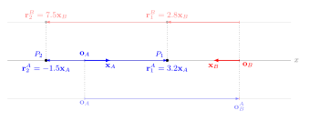
Reference frame \(B\) is translated and rotated with respect to reference frame \(A\). Every point in the 1D space can be represented in either frame, but the numbers will be different.
Changing between reference frames
How do we change between reference frames?
Points \(P_1\) and \(P_2\) in the two reference frames.
\[\begin{matrix} \v{r}_1^{A} = \m{3.2} & \v{r}_2^{A} = \m{-1.5} \\ \v{r}_1^{B} = \m{2.8} & \v{r}_2^{B} = \m{7.5} \end{matrix} \]
How are these numbers related?
Requires us to do vector addition and scaling.
Changing between reference frames
How do we change between reference frames?
Vector Addition and Scaling in 1D:
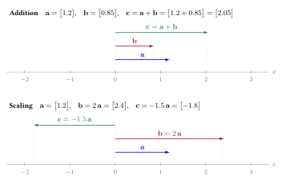
Changing between reference frames
How do we change between reference frames?
Magnitude of a vector: Also referred to as the 2-norm, Euclidean norm, or length of a vector.
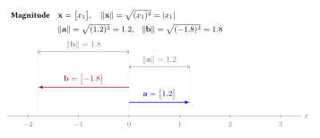
Changing between reference frames
How do we change between reference frames?
Standard Inner Product between two vectors.
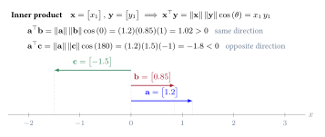
Changing between reference frames
How do we change between reference frames?
Two pieces of information to change between reference frames:
Rotation of the basis of the target (\(B\)) w.r.t. the base frame (\(A\)). Represented by a rotation matrix \(\v{R}_{B}^{A}\).
Translation of the origin of the target frame (\(B\)) w.r.t. the base frame (\(A\)), represented in the base frame. Represented by a translation vector \(\v{o}_{B}^{A}\).
Changing between reference frames
Rotation Matrix
Rotation Matrix: \(\v{R}_{B}^{A} \in \mathbb{R}^{1 \times 1}\) — Represents what the basis vectors of the frame \(B\) (subscript) look like in the frame \(A\) (superscript).
\[ \v{R}_{B}^{A} = \m{\v{x}_{A}^\top \v{x}_{B}} \]
In the above example, \(\v{R}_{B}^{A} = \m{-1}\), because \(\Vert \v{x}_A \Vert = 1\), \(\Vert \v{x}_B \Vert = 1\) and \(\theta = 180^\circ\).
Changing between reference frames
Translation Vector
Translation Vector: \(\v{o}_{B}^{A} \in \mathbb{R}^{1 \times 1}\) — Represents the position of the origin of the frame \(B\) (subscript) in the frame \(A\) (superscript). In the above example, \(\v{o}_{B}^{A} = \m{6}\).
The full description of the reference frame \(B\) w.r.t. the reference frame \(A\) is given by the pair \(\left( \v{R}_{B}^{A}, \v{o}_{B}^{A} \right)\).
This pair can be used to transform any vector expressed in frame \(B\) to frame \(A\).
Changing between reference frames
Going back and forth between frames
Given the pair \(\left( \v{R}_{B}^{A}, \v{o}_{B}^{A} \right)\), we can transform any vector expressed in frame \(B\) to frame \(A\) using the following equation:
\[ \v{r}_{i}^{A} = \v{R}_{B}^{A} \, \v{r}_{i}^{B} + \v{o}_{B}^{A} \]
Product of a matrix with a vector results in a vector.
In 1D, this product is very simple. We simply multiply the individual elements of the matrix and the vector.
Changing between reference frames
Going back and forth between frames
Given the pair \(\left( \v{R}_{B}^{A}, \v{o}_{B}^{A} \right)\), how do we go the other way around? \(\v{r}_{i}^{A} \mapsto \v{r}_{i}^{B}\).
\[ \v{r}_{i}^{B} = {\v{R}_{B}^{A}}^{-1} \left( \v{r}_{i}^{A} - \v{o}_{B}^{A} \right) = \v{R}_{A}^{B} \v{r}_{i}^{A} + \v{o}_{A}^{B} \]
where, \({\v{R}_{B}^{A}}^{-1} = \v{R}_{A}^{B}\), and \(\v{o}_{A}^{B} = -{\v{R}_{B}^{A}}^{-1}\v{o}_{B}^{A}\).
We obtain \({\v{R}_{B}^{A}}^{-1}\) by inverting the single number in the matrix. So, for the above example, we have, \[ {\v{R}_{B}^{A}}^{-1} = \v{R}_{A}^{B} = \m{\frac{1}{-1}} = \m{-1} \qquad \v{o}_{A}^{B} = -{\v{R}_{B}^{A}}^{-1} \v{o}_{B}^{A} = -\m{-1}\m{6} = \m{6} \]
Changing between reference frames
Going back and forth between frames \(A\) and \(B\)
Given: \(\v{R}_{A}^{B} = \m{-1}\) and \(\v{o}_{A}^{B} = \m{6}\).
Going from \(A\) to \(B\).
\[ P_1: \m{3.2} = \m{-1} \m{2.8} + \m{6} = \m{-2.8} + \m{6} = \m{3.2} \] \[ P_2: \m{-1.5} = \m{-1} \m{7.5} + \m{6} = \m{-7.5} + \m{6} = \m{-1.5} \]
Going from \(B\) to \(A\).
\[ P_1: \m{2.8} = \m{-1} \m{3.2} + \m{6} = \m{-3.2} + \m{6} = \m{2.8} \] \[ P_2: \m{7.5} = \m{-1} \m{-1.5} + \m{6} = \m{1.5} + \m{6} = \m{7.5} \]
Changing between reference frames
Now a third reference frame!
Let’s try a problem by bringing in a third reference frame \(C\).
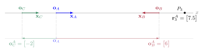
- Find the pair \(\left( \v{R}_{C}^{A}, \v{o}_{C}^{A} \right)\). \(\longrightarrow \m{1.0}, \m{-2}\)
- Find the pair \(\left( \v{R}_{A}^{C}, \v{o}_{A}^{C} \right)\). \(\longrightarrow \m{1.0}, \m{2}\)
- Find \(\v{r}_{3}^{B}\). \(\longrightarrow \m{-1.5}\)
- Find \(\v{r}_{3}^{C}\). \(\longrightarrow \m{9.5}\)
- Find the pair \(\left( \v{R}_{C}^{B}, \v{o}_{C}^{B} \right)\). \(\longrightarrow \m{-1.0}, \m{8}\)
- Find the pair \(\left( \v{R}_{B}^{C}, \v{o}_{B}^{C} \right)\). \(\longrightarrow \m{-1.0}, \m{8}\)
Describing movements with numbers in 2D
Movement description in 2D
In the 2D real plane, we can represent the position of individual points using two numbers after we choose a reference frame — origin and basis vectors.
Reference frame \(A\): origin \(\v{o}_{A}\) and orthonormal basis \(\{ \v{x}_A, \v{y}_A \}\), where \(\Vert \v{x}_{A} \Vert = \Vert \v{y}_{A} \Vert = 1\) and \(\v{x}_{A}^\top \v{y}_{A} = 0\).
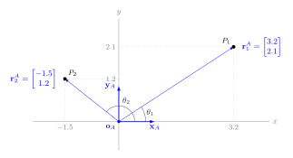
Points in the plane are represented as column vectors \(\v{r}_i^{A} \in \mathbb{R}^2\) w.r.t. the reference frame \(A\). \[ \v{r}_{1}^{A} = \m{ r_{11}^A \\ r_{12}^A} = \m{ \v{x}_A^\top \v{r}_1^{A} \\ \v{y}_A^\top \v{r}_1^{A}} = \m{ \Vert \v{x}_A \Vert \Vert \v{r}_1^{A} \Vert \cos \left( \theta_1 \right) \\ \Vert \v{y}_A \Vert \Vert \v{r}_1^{A} \Vert \sin \left( \theta_1 \right)} = \m{ \Vert \v{r}_1^{A} \Vert \cos \left( \theta_1 \right) \\ \Vert \v{r}_1^{A} \Vert \sin \left( \theta_1 \right)} \]
Describing movements with numbers in 2D
Vector addition in 2D
Vector addition in \(\mathbb{R}^2\)
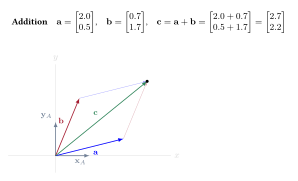
Describing movements with numbers in 2D
Vector scaling in 2D
Vector scaling in \(\mathbb{R}^2\)
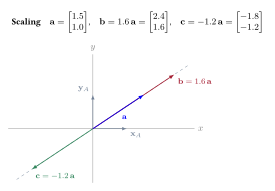
Describing movements with numbers in 2D
Movement description in 2D
The representation of \(P_1\) and \(P_2\) in reference frame \(A\) is \(\v{r}_{1}^{A} = \m{3.2 \\ 2.1}\) and \(\v{r}_{2}^{A} = \m{-1.5 \\ 1.2}\), respectively.
The following is what these numbers mean:
\[ \v{r}_{1}^{A} = 3.2 \v{x}_A + 2.1 \v{y}_A \qquad \qquad \v{r}_{2}^{A} = -1.5 \v{x}_A + 1.2 \v{y}_A\]
Different reference frames in 2D
Reference frame sharing the origin
Consider a second reference frame \(B\) shown in the figure. Both these reference frames share the same origin, but are rotated with respect to each other.
Note: \(\Vert \v{x}_{B} \Vert = \Vert \v{y}_{B} \Vert = 1\) and \(\v{x}_{B}^\top\v{y}_{B} = 0\).
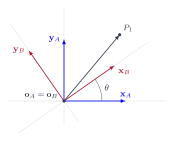
The rotation of frame \(B\) with respect to frame \(A\) is given by a \(2 \times 2\) real matrix \(\v{R}_{B}^{A} \in \mathbb{R}^{2 \times 2}\).
\[ \v{R}_{B}^{A} = \m{\v{x}_{B}^{A} & \v{y}_{B}^{A}} = \m{\v{x}_{A}^\top \v{x}_{B} & \v{x}_{A}^\top \v{y}_{B} \\ \v{y}_{A}^\top \v{x}_{B} & \v{y}_{A}^\top \v{y}_{B}}\]
\[ \v{R}_{B}^{A} = \m{ \cos\left( \theta \right) & -\sin\left( \theta \right) \\ \sin\left( \theta \right) & \cos\left( \theta \right) }\]
Representation of \(P_1\) in reference frames \(A\) and \(B\) are \(\v{r}_{1}^{A}\) and \(\v{r}_{1}^{B}\), respectively. \[ \v{r}_{1}^{A} = \m{r_{11}^{A} \\ r_{12}^{A}} \qquad \v{r}_{1}^{B} = \m{r_{11}^{B} \\ r_{12}^{B}} \qquad \v{r}_{1}^{A} = \v{R}_{B}^{A} \, \v{r}_1^{B} \]
The linear algebra we need
Vectors, matrices and a few of their operations
Vectors \(\mathbb{R}^n\) are an ordered collection of real numbers \(\mathbb{R}\). We will also write them as a column and call them column vectors.
\[ \v{x} = \m{x_1 \\ x_2 \\ \vdots \\ x_n} \]
The transpose operation changes a column vector to a row vector and vice versa.
\[ \v{x}^\top = \m{x_1 & x_2 & \cdots & x_n} \qquad \qquad \left(\v{x}^\top\right)^\top = \v{x} \]
Addition and scaling rules and their geometric interpretation are the same as that in \(\mathbb{R}^2\).
2-Norm: Consider a vector \(\v{x} \in \mathbb{R}^n\). \(\Vert \v{x} \Vert = \sqrt{\sum_{i=1}^n x_i^2 }\)
Standard inner product: Consider two vectors, \(\v{x}, \v{y} \in \mathbb{R}^n\).
\[ \v{x}^\top\v{y} = \m{x_1 & x_2 & \cdots & x_n}\m{y_1 \\ y_2 \\ \vdots \\ y_n} = \sum_{i=1}^n x_iy_i = \Vert \v{x} \Vert \Vert \v{y} \Vert \cos \left(\theta\right)\]
where, \(\theta\) is the angle between \(\v{x}\) and \(\v{y}\).
The linear algebra we need
Vectors, matrices and a few of their operations
Matrices \(\mathbb{R}^{p \times q}\) are a rectangular arrangement of numbers \(\mathbb{R}\).
\[ \v{A} = \m{a_{11} & a_{12} & \cdots & a_{1q} \\ a_{21} & a_{22} & \cdots & a_{2q} \\ \vdots & \vdots & \ddots & \vdots \\ a_{p1} & a_{p2} & \cdots & a_{pq}} \in \mathbb{R}^{p \times q}\]
where, \(a_{ij}\) is the component of the matrix in the \(i^{th}\) row and \(j^{th}\) column. When \(p = q\), \(\v{A}\) is a square matrix, else it’s a rectangular matrix.
With this definition, we can think of column vectors as a matrix with a single column, and a row vector as a matrix with a single row.
We can also think of the matrix \(\v{A}\) as a row of column vectors from \(\mathbb{R}^p\).
\[ \v{A} = \m{\v{a}_{1} & \v{a}_{2} & \cdots & \v{a}_{q}} \in \mathbb{R}^{p \times q}\]
where, \(\v{a}_{i} \in \mathbb{R}^p\) is the \(i^{th}\) column of \(\v{A}\).
Transpose of a matrix switches the rows and columns. \(\v{A}^\top \in \mathbb{R}^{q \times p}\).
\[ \v{A}^\top = \m{a_{11} & a_{21} & \cdots & a_{p1} \\ a_{12} & a_{22} & \cdots & a_{p2} \\ \vdots & \vdots & \ddots & \vdots \\ a_{1q} & a_{2q} & \cdots & a_{pq}} \in \mathbb{R}^{q \times p}\]
The linear algebra we need
Vectors, matrices and a few of their operations
Matrix-vector product Let \(\v{A} \in \mathbb{R}^{p \times q}\) and \(\v{x} \in \mathbb{R}^{q \times 1}\). We can define this product as the following,
\[ \mathbb{R}^{p} \ni \v{y} = \v{A}\v{x} = \m{a_{11} & a_{12} & \cdots & a_{1q} \\ a_{21} & a_{22} & \cdots & a_{2q} \\ \vdots & \vdots & \ddots & \vdots \\ a_{p1} & a_{p2} & \cdots & a_{pq}} \m{x_1 \\ x_2 \\ \vdots \\ x_q} = \m{\sum_{i=1}^qa_{1i} x_i \\ \sum_{i=1}^qa_{2i} x_i \\ \vdots \\ \sum_{i=1}^qa_{pi} x_i}\]
We can also view \(\v{A}\v{x}\) as the following,
\[ \v{y} = \v{A}\v{x} = \m{\v{a}_{1} & \v{a}_{2} & \cdots & \v{a}_{q}} \m{x_1 \\ x_2 \\ \vdots \\ x_q} = \sum_{i=1}^q x_i \v{a}_{i}\]
Matrix-Matrix product Let \(\v{A} \in \mathbb{R}^{p \times q}\) and \(\v{B} \in \mathbb{R}^{q \times r}\). Then we can define the product of these two matrices as the following,
\[ \mathbb{R}^{p \times r} \ni \v{C} = \m{c_{11} & c_{12} & \cdots & c_{1r} \\ c_{21} & c_{22} & \cdots & c_{2r} \\ \vdots & \vdots & \ddots & \vdots \\ c_{p1} & c_{p2} & \cdots & c_{pr}} = \v{A}\v{B} = \m{a_{11} & a_{12} & \cdots & a_{1q} \\ a_{21} & a_{22} & \cdots & a_{2q} \\ \vdots & \vdots & \ddots & \vdots \\ a_{p1} & a_{p2} & \cdots & a_{pq}} \m{b_{11} & b_{12} & \cdots & b_{1r} \\ b_{21} & b_{22} & \cdots & b_{2r} \\ \vdots & \vdots & \ddots & \vdots \\ b_{q1} & b_{q2} & \cdots & b_{qr}} \qquad c_{ij} = \sum_{k} a_{ik}b_{kj}\]
Matrix multiplication \(\v{A}\v{B}\) is allowed if and only if the number of columns of \(\v{A}\) equals the number of rows of \(\v{B}\).
Different reference frames in 2D
Let’s do an example
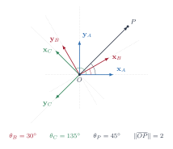
Find the following.
- \(\v{r}_{P}^{A}\). \(\longrightarrow \m{\sqrt{2} \\ \sqrt{2}}\)
- \(\v{R}_{B}^{A}\). \(\longrightarrow \frac{1}{2}\m{\sqrt{3} & -1 \\ 1 & \sqrt{3}}\)
- \(\v{R}_{A}^{B}\). \(\longrightarrow \frac{1}{2}\m{\sqrt{3} & 1 \\ -1 & \sqrt{3}}\)
- \(\v{R}_{C}^{A}\). \(\longrightarrow \frac{1}{\sqrt{2}}\m{-1 & -1 \\ 1 & -1}\)
- \(\v{R}_{A}^{C}\). \(\longrightarrow \frac{1}{\sqrt{2}}\m{-1 & 1 \\ -1 & -1}\)
- \(\v{r}_{P}^{B}\). \(\longrightarrow \frac{1}{2}\m{\sqrt{6}+\sqrt{2} \\ \sqrt{6}-\sqrt{2}}\)
- \(\v{r}_{P}^{C}\). \(\longrightarrow \m{0 \\ -2}\)
- \(\v{R}_{B}^{C}\). \(\longrightarrow \frac{1}{4}\m{\sqrt{2}-\sqrt{6} & \sqrt{6}+\sqrt{2} \\ -\sqrt{6}-\sqrt{2} & \sqrt{2}-\sqrt{6}}\)
- \(\v{R}_{C}^{B}\). \(\longrightarrow \frac{1}{4}\m{\sqrt{2}-\sqrt{6} & -\sqrt{6}-\sqrt{2} \\ \sqrt{6}+\sqrt{2} & \sqrt{2}-\sqrt{6}}\)
Different reference frames in 2D
Let’s now shift the origin
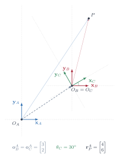
What is \(\v{R}_{B}^{A}\)? \(\longrightarrow \m{1 & 0 \\ 0 & 1} = \v{I}\)
What is \(\v{r}_{P}^{B}\)? \(\longrightarrow \m{1 \\ 4}\)
What is \(\v{R}_{C}^{B}\)? \(\longrightarrow \m{\frac{\sqrt{3}}{2} & -\frac{1}{2} \\ \frac{1}{2} & \frac{\sqrt{3}}{2}}\)
How do we change between reference frames \(A\) and \(B\)? We have rotation and the translation. \(\left( \v{R}_{B}^{A}, \v{o}_{B}^{A}\right)\).
\[ \v{r}_{P}^{A} = \v{R}_{B}^{A} \v{r}_{P}^{B} + \v{o}_{B}^{A} \] \[ \v{r}_{P}^{B} = {\v{R}_{B}^{A}}^{-1} \left( \v{r}_{P}^{A} - \v{o}_{B}^{A} \right) \]
\[\implies \v{R}_{A}^{B} = {\v{R}_{B}^{A}}^{-1} = {\v{R}_{B}^{A}}^{\top} \qquad \v{o}_{A}^{B} = -{\v{R}_{B}^{A}}^{\top}\v{o}_{B}^{A}\]
Different reference frames in 2D
Let’s now shift the origin
What is \(\v{r}_{P}^{C}\) if we know \(\v{r}_P^{B}\)?
We need \(\left( \v{R}_{C}^{B}, \v{o}_{C}^{B}\right) \longrightarrow \v{r}_{P}^{C} = \v{R}_{B}^{C} \left(\v{r}_{P}^{B} - \v{o}_{C}^{B} \right)\)
\[\v{r}_{P}^{C} = \m{\frac{\sqrt{3}}{2} + 2 \\ -\frac{1}{2} + 2\sqrt{3}}\]
What is \(\v{r}_{P}^{C}\) if we know \(\v{r}_P^{A}\)?
We need \(\left( \v{R}_{C}^{A}, \v{o}_{C}^{A}\right)\)
\[\v{R}_{C}^{A} = \v{R}_{B}^{A}\v{R}_{C}^{B} \qquad \v{o}_{C}^{A} = \v{o}_{B}^{A} + \v{R}_{B}^{A} \v{o}_{C}^{B}\]
\[\v{r}_{P}^{C} = \v{R}_{A}^{C}\left(\v{r}_{P}^{A} - \v{o}_{C}^{A}\right)\]
What is \(\v{r}_{P}^{C}\), if \(\v{o}_{C}^{B} = \m{1 \\ 1}\)? \(\v{r}_{P}^{C} = \m{\frac{3}{2} \\ \frac{3\sqrt{3}}{2}}\)
Different reference frames in 2D
Homogeneous Coordinates
\[ \v{r}_{P}^{A} = \v{R}_{B}^{A} \v{r}_{P}^{B} + \v{o}_{B}^{A} \qquad \qquad \v{r}_{P}^{B} = {\v{R}_{B}^{A}}^{\top} \left( \v{r}_{P}^{A} - \v{o}_{B}^{A} \right) \]
Note that rotation is represented by a matrix multiplication operation, while translation is represented by vector addition.
Homogeneous coordinates
We can express this entire transformation through a multiplication operation if we choose the homogeneous coordinate representation.
Let \(\tilde{\v{r}}_{P}^{C}\) be the homogeneous coordinates of the point \(P\) in reference frame \(C\): \(\quad \tilde{\v{r}}_{P}^{C} = \m{\v{r}_{P}^{C} \\ 1}\).
Note that an \(n\)-dimensional vector is represented by an \((n+1)\)-dimensional vector in the homogeneous coordinates.
In the homogeneous coordinates, there are infinitely many ways to represent the same point.
\[\m{x \\ y \\ z \\ 1} \;{\Large\equiv}\; \m{\lambda x \\ \lambda y \\ \lambda z \\ \lambda}\]
Different reference frames in 2D
Homogeneous Transformation
Homogeneous transformation
Both translation and rotation have a matrix representation – homogeneous transformation matrix.
The homogeneous transformation matrix representing frame \(C\) w.r.t. \(A\) is given by, \(\v{H}_{C}^{A} = \m{\v{R}_{C}^{A} & \v{o}_{C}^{A} \\ \v{0} & 1}\)
We can obtain the homogeneous representation of \(P\) in \(A\) from \(\v{r}_{P}^{C}\) as follows,
\[ \tilde{\v{r}}_{P}^{A} = \v{H}_{C}^{A} \tilde{\v{r}}_{P}^{C} \quad \implies \quad \tilde{\v{r}}_{P}^{C} = \v{H}_{A}^{C} \tilde{\v{r}}_{P}^{A} = {\v{H}_{C}^{A}}^{-1} \tilde{\v{r}}_{P}^{A}\]
What is \({\v{H}_{C}^{A}}^{-1}\)? \(\longrightarrow \m{{\v{R}_{C}^{A}}^\top & -{\v{R}_{C}^{A}}^\top \v{o}_{C}^{A} \\ \v{0} & 1}\)
Different reference frames in 3D
Ideas from 2D generalize to 3D
Each coordinate is an inner product: drop a perpendicular onto that axis, and the length you cut off is \(\v{x}_{A}^\top \v{r}_{P}^{A}\).
Different reference frames in 3D
Ideas from 2D generalize to 3D
Two reference frames, rotated and translated with respect to each other. The same point \(P\) — two sets of numbers. Switch which frame the world is drawn in: the picture changes, the numbers do not.
Different reference frames in 3D
Ideas from 2D generalize to 3D
The representation of a reference frame \(B\) w.r.t. \(A\) requires the rotation matrix \(\v{R}_{B}^{A}\) and the translation of the origin \(\v{o}_{B}^{A} \in \mathbb{R}^3\).
\[ \v{R}_{B}^{A} = \m{ \v{x}_{A}^\top \v{x}_B & \v{x}_{A}^\top \v{y}_B & \v{x}_{A}^\top \v{z}_B \\ \v{y}_{A}^\top \v{x}_B & \v{y}_{A}^\top \v{y}_B & \v{y}_{A}^\top \v{z}_B \\ \v{z}_{A}^\top \v{x}_B & \v{z}_{A}^\top \v{y}_B & \v{z}_{A}^\top \v{z}_B} \in \mathbb{R}^{3 \times 3}\]
The transformation between \(A\) and \(B\) is given by the following,
\[ \v{r}_{P}^{A} = \v{R}_{B}^{A} \v{r}_{P}^{B} + \v{o}_{B}^{A} \qquad \qquad \v{r}_{P}^{B} = {\v{R}_{B}^{A}}^{\top} \left( \v{r}_{P}^{A} - \v{o}_{B}^{A} \right) \]
In the homogeneous representation, we have \(\tilde{\v{r}}_{P}^{B} = \m{\v{r}_{P}^{B} \\ 1}\). And the homogeneous transformation matrix \(\v{H}_{B}^{A} \in \mathbb{R}^{4 \times 4}\).
\[\tilde{\v{r}}_{P}^{A} = \v{H}_{B}^{A} \tilde{\v{r}}_{P}^{B} \quad \implies \quad \tilde{\v{r}}_{P}^{B} = \v{H}_{A}^{B} \tilde{\v{r}}_{P}^{A} = {\v{H}_{B}^{A}}^{-1} \tilde{\v{r}}_{P}^{A}\]
Representing kinematics of rigid bodies
How many numbers do we need?
A rigid body is a collection of points whose relative spatial location with respect to each other does not change no matter the forces acting on these points.
Useful approximation for many applications, simplifying representing/analysing kinematics of real objects.
We need a total of 6 numbers to represent its position and orientation w.r.t. a reference frame.
\[ \text{Rigid body in 3D space} \longrightarrow \left( \alpha, \beta, \gamma, x, y, z\right)\]
\(\left(\alpha, \beta, \gamma\right)\) represent the orientation of the body in space, and \(\left(x, y, z\right)\) represents, typically, the position of some point in the rigid body. Once we know these 6 numbers, we know (i.e. can compute) the location of every point in the rigid body.
One of many ways to describe rigid body kinematics in 3D space; all representations need 6 numbers.
These numbers are also referred to as degrees-of-freedom (DOFs).
Representing kinematics of rigid bodies
How many numbers do we need?
Representing kinematics of connected rigid bodies
How many numbers for connected rigid bodies?
If we have two independent rigid bodies in space, how many numbers do we need to describe their kinematics in 3D space? 12
When we say two rigid bodies are connected together, we mean that the two bodies have constraints on how they can move with respect to each other.
Reduces the numbers we need to describe the kinematics of the connected rigid bodies to be lower than 12.
Each constraint on the movements of the two connected bodies reduces the number of DOFs by 1.
\[\text{DOFs of two connected rigid bodies} = 12 - \text{No. of kinematic constraints}\]
We will refer to this connection as a joint, and we can talk about the DOFs of a joint.
\[\text{DOFs of a joint} = 6 - \text{No. of kinematic constraints}\]
The body as connected rigid bodies
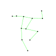
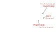
Full body kinematics: Track one body segment and the joint angles of the connected segments.
Individual joint kinematics: Track only the segments connected at the joints.
Measuring Kinematics
How do we measure kinematics?
General approach: track all 6DOFs of each limb segment \(\longrightarrow\) derive the individual joint variables.
- Pros: Full characterisation; Suitable for complex movement behaviors (e.g. gait analysis, upper-limb reaching, object manipulation, etc.).
- Cons: Too much information for simple movements (e.g. knee flexion/extension, elbow range of motion); Complex, expensive tools required.
Joint level approach: track specific joint variables of interest.
- Pros: Simple, compact tools. Focused, relevant information for simple movements.
- Cons: Unsuitable for complex movements.
We will explore sensing tools for both approaches.
- Camera-based motion tracking with markers (standard & fiducial).
- Inertial measurement units
- Optical and magnetic encoders
Camera-based movement tracking

Marker-based motion-capture suit. Image: cgicoffee.com
- Each marker is treated as a dot or point in space.
- \((x_i, y_i, z_i)\) position of the \(i^{th}\) marker estimated from the cameras in a lab-fixed reference frame.
\[ \left(x_i, y_i, z_i \right)_{i=1}^{M} \longrightarrow \left(x_j, y_j, z_j, \alpha_j, \beta_j, \gamma_j \right)_{j=1}^{L} \longrightarrow \left(\theta_k, \phi_k, \chi_k \right)_{k=1}^{J}\]
Camera-based movement tracking
A camera captures the spatial distribution of light arriving from the environment — it records the direction from which light arrives, not the distance it has travelled.
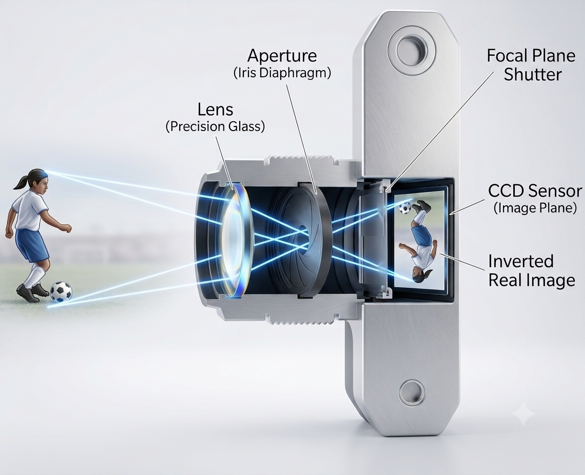
Camera optics produce an image of the world, captured by an image sensor (CCD or CMOS) in digital cameras, or by film in traditional cameras.
An image \(I\left(x, y\right)\) is a 2D distribution of brightness of light. For a camera, the 2D surface is a rectangular region \(\Omega\). \[ I: \Omega \subset \mathbb{R}^2 \mapsto \mathbb{R}_{+}; \quad \Omega \ni \left(x, y\right) \mapsto I\left(x, y\right) \in \mathbb{R}_{+} \]
Image intensity \(I\left(x, y\right)\) at any location \(\left(x, y\right)\) is determined by the amount of light entering the camera through its optical system that directs the light to the image sensor.
Geometry of the optics determines the mapping of the spatial location of a source of light in the world \(\left(x^W, y^W, z^W\right)\) to a spatial location of the image \(\left(x^I, y^I\right)\).
We will primarily focus on the geometry of the optics for the purpose of kinematics tracking using camera image.
Camera-based movement tracking
Physics of a Pinhole Camera
A useful and simplified model of the geometry of a camera’s optics is provided by a pinhole camera.
A box with an infinitesimally small hole that lets only a single ray from each point enter the box.
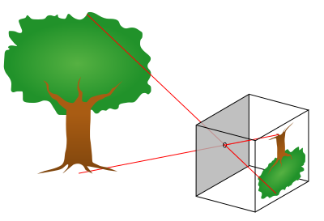
Produces an inverted image of the world on the back wall.
Camera-based movement tracking
Physics of a Pinhole Camera
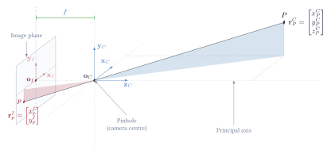
\(P\) in space has coordinates \(\v{r}_P^C = \m{x_P^C & y_P^C & z_P^C}^\top \in \mathbb{R}^3\) w.r.t. the camera reference frame.
\(p\) is the corresponding point in the image with coordinates \(\v{r}_p^I = \m{x_p^I & y_p^I}^\top \in \mathbb{R}^2\) w.r.t. the image reference frame.
\(\mathbf{o}_I\) is principal point of the image, i.e. the point where the optical axis intersects the image plane.
Camera-based movement tracking
Physics of a Pinhole Camera
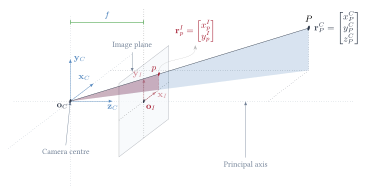
Assume the image plane to be in front of the camera center, then we have,
\[x_p^I = \frac{f}{z_P^C} x_P^C \qquad y_p^I = \frac{f}{z_P^C} y_P^C \implies z_P^C \m{x_p^I \\ y_p^I \\ 1} = \m{f & 0 & 0 & 0\\ 0 & f & 0 & 0\\ 0 & 0 & 1 & 0}\m{x_P^C \\ y_P^C \\ z_P^C \\ 1}\]
Camera-based movement tracking
Physics of a Pinhole Camera
\[x_p^I = \frac{f}{z_P^C} x_P^C \qquad y_p^I = \frac{f}{z_P^C} y_P^C\] \[\v{r}_p^I = \m{x_p^I \\ y_p^I \\ 1} \equiv \m{f x_P^C \\ f y_P^C \\ z_P^C} = \m{f & 0 & 0 & 0\\ 0 & f & 0 & 0\\ 0 & 0 & 1 & 0}\m{x_P^C \\ y_P^C \\ z_P^C \\ 1}\]
We can now split this into two matrices,
\[\m{f & 0 & 0 & 0\\ 0 & f & 0 & 0\\ 0 & 0 & 1 & 0} = \m{f & 0 & 0\\ 0 & f & 0\\ 0 & 0 & 1} \m{1 & 0 & 0 & 0\\ 0 & 1 & 0 & 0\\ 0 & 0 & 1 & 0} = \m{f & 0 & 0\\ 0 & f & 0\\ 0 & 0 & 1} \m{\v{I}_3 & \v{0}}\]
\[\v{r}_p^I = \m{f & 0 & 0\\ 0 & f & 0\\ 0 & 0 & 1} \m{\v{I}_3 & \v{0}} \v{r}_P^C\]
Note: we will drop the \(\,\, \tilde{} \,\,\) symbol for vectors since we will mostly deal with homogeneous coordinates in this section.
Camera-based movement tracking
Physics of a Pinhole Camera
If the point \(P\) is represented with respect to a world coordinate frame \(W\) represented by \(\left( \v{R}_{W}^{C}, \v{o}_{W}^{C}\right)\), then we have,
\[\v{r}_P^C = \m{\v{R}_{W}^{C} & \v{o}_{W}^{C} \\ \v{0} & 1} \v{r}_P^W\]
\[\implies \v{r}_p^I = \m{f & 0 & 0\\ 0 & f & 0\\ 0 & 0 & 1} \m{\v{I}_3 & \v{0}} \m{\v{R}_{W}^{C} & \v{o}_{W}^{C} \\ \v{0} & 1} \v{r}_P^W = \m{f & 0 & 0\\ 0 & f & 0\\ 0 & 0 & 1} \m{\v{R}_{W}^{C} & \v{o}_{W}^{C}} \v{r}_P^W\]
The 6 parameters associated with the transformation between the world \(W\) and the camera \(C\) reference frames are called the extrinsic parameters of the camera.
Camera-based movement tracking
Physics of a Pinhole Camera
Camera-based movement tracking
Physics of a Pinhole Camera
With digital cameras, positions on an image are reported in pixels. Each pixel corresponds to a sensing area on the image plane.
We need to convert from \(\v{r}_p^I\) (e.g. units of mm) to sensor coordinates \(\v{r}_p^S\) in pixels.
The origin and the coordinate axes for the sensor frame \(S\) can be different.
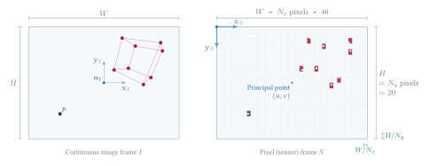
How do we convert from \(\v{r}_p^I\) to \(\v{r}_p^S\)?
Camera-based movement tracking
Physics of a Pinhole Camera
How do we convert from \(\v{r}_p^I\) to \(\v{r}_p^S\)?
\[\v{r}_p^S = \m{s_x & s_{\theta} & 0 \\ 0 & s_y & 0 \\ 0 & 0 & 1} \m{1 & 0 & u \\ 0 & -1 & v \\ 0 & 0 & 1} \v{r}_p^I\]
\[\begin{align} x_p^S &= s_x\left(x_p^I + u\right) + s_\theta \left(-y_p^I + v\right) \\ y_p^S &= s_y\left(-y_p^I + v\right) \end{align}\]
\[\v{r}_p^S = \m{s_x & s_{\theta} & 0 \\ 0 & s_y & 0 \\ 0 & 0 & 1} \m{1 & 0 & u \\ 0 & -1 & v \\ 0 & 0 & 1} \m{f & 0 & 0\\ 0 & f & 0\\ 0 & 0 & 1} \m{\v{R}_{W}^{C} & \v{o}_{W}^{C}} \v{r}_P^W = \v{K}_f \m{\v{R}_{W}^{C} & \v{o}_{W}^{C}} \v{r}_P^W\]
Looks like there are additional 6 parameters associated with the camera itself – \(\left(f, s_x, s_y, s_\theta, u, v\right)\). But there are only 5!
\[\v{K}_f = \m{s_x f & -s_{\theta} f & s_x u + s_\theta v \\ 0 & -s_y f & s_y v \\ 0 & 0 & 1}\]
Camera-based movement tracking
Physics of a Pinhole Camera
Camera-based movement tracking
Physics of a Pinhole Camera
The full camera image formation model for the pinhole camera is given by,
\[\v{r}_p^S = \v{K}_f \m{\v{R}_{W}^{C} & \v{o}_{W}^{C}} \v{r}_P^W, \qquad \v{K}_f = \m{f_x & s & o_{xs} \\ 0 & f_y & o_{ys} \\ 0 & 0 & 1 }\]
where,
- \(f_x\) is the focal length in horizontal pixels.
- \(f_y\) is the focal length in vertical pixels.
- \(s\) is the skew when the sensor’s rows and columns are not perpendicular.
- \(o_{xs}\) is the principal point’s horizontal location in pixels.
- \(o_{ys}\) is the principal point’s vertical location in pixels.
These are the 5 intrinsic parameters of the camera.
We need to know all 11 parameters to know the full mapping from 3D coordinates to image coordinates in pixels.
These are obtained through a camera calibration procedure.
Camera-based movement tracking
Camera distortion
Real cameras are not pinhole cameras. They employ lenses to collect more light for producing brighter images.
Lenses introduce different types of distortions on images. The most common distortions considered are: (a) radial distortion or barrel distortion, and (b) tangential distortion
The distortion acts before the pixel conversion, on the normalised coordinates \(\v{r}_p^N\) — centred on the optical axis and divided by \(z_P^C\), so they carry no units:
\[\m{{x_p^N} \\ {y_p^N}} = \frac{1}{z_P^C}\m{x_P^C \\ y_P^C}, \qquad r^2 = {x_p^N}^2 + {y_p^N}^2\]
\[\v{r}_p^D = \v{f}_d\left( \v{r}_p^N \right) = \underbrace{\left(1 + k_1 r^2 + k_2 r^4 + k_3 r^6\right)\m{{x_p^N} \\ {y_p^N}}}_{\textrm{radial}} + \underbrace{\m{2 p_1 {x_p^N} {y_p^N} + p_2 \left(r^2 + 2{x_p^N}^2\right) \\ p_1\left(r^2 + 2{y_p^N}^2\right) + 2 p_2 {x_p^N} {y_p^N}}}_{\textrm{tangential}}\]
\[\v{r}_p^S = \v{K}_f \, \v{r}_p^D \qquad \textrm{— only now do we get pixels}\]
Camera-based movement tracking
Camera distortion
Camera-based movement tracking
Camera calibration
Camera image formation model \[\v{r}_p^S = \underbrace{\v{K}_f}_{\textrm{5 intrinsic}} \underbrace{\m{\v{R}_{W}^{C} & \v{o}_{W}^{C}}}_{\textrm{6 extrinsic}} \v{r}_P^W = \boldsymbol{\Pi} \v{r}_P^W\]
Intrinsic — properties of the camera itself. Measured once, valid until someone changes the lens or the zoom.
Extrinsic — where the camera is. Changes the moment anyone moves it.
Calibration is how we get numbers in the above model.
The idea behind every method is the same:
- put objects of known geometry in front of the camera.
- find them in the image.
- ask which numbers would have produced the picture we actually got.
Camera-based movement tracking
Camera calibration — Direct Linear Transform
The oldest and simplest approach — solve for all 11 numbers of \(\boldsymbol{\Pi}\) in one step.
You provide
- A 3D object whose points you have measured — a calibration frame or jig.
- At least 6 points, and their positions in the image.
- The points must not all lie on a plane.
The software returns
- \(\boldsymbol{\Pi}\), the whole \(3 \times 4\) matrix, up to scale.
- From which the intrinsics and extrinsics can be separated.
Each point gives two equations — one for its row, one for its column in the image. Six points give twelve, which is enough for eleven unknowns.
Issues with the method
- Requires a measured calibration object with known, non-coplanar points that fill the capture volume — estimates extrapolate poorly outside it.
- Ignores lens distortion — unmodelled distortion biases all 11 parameters.
- Fits 11 free parameters without enforcing the structure of \(\boldsymbol{\Pi} = \v{K}\m{\v{R} \mid \v{o}}\) (orthogonal \(\v{R}\)), so the spare degrees of freedom absorb measurement noise. <!– Revisit in a later version: this is fixed by refinement (as in the fiducial notes §7), unlike the points above.
- Minimises algebraic rather than reprojection error; needs data normalisation to be well-conditioned. –>
Camera-based movement tracking
Camera calibration — Zhang’s method
The method every calibration tool uses. It needs only a flat printed target — no machined 3D rig.
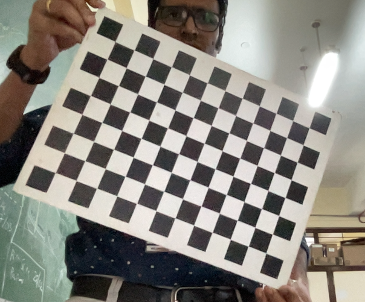
You provide
- A checkered board of known square size.
- Many photographs of it — 15 to 20 — held at different tilts, distances, and positions in the frame.
The software returns
- The 5 intrinsic parameters.
- The distortion parameters \(k_1, k_2, k_3, p_1, p_2\).
- Where the board was in each photograph.
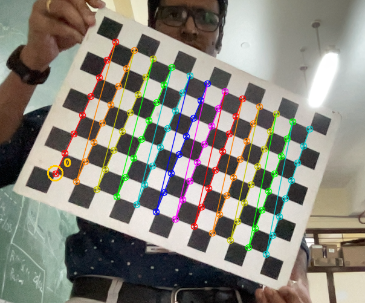
How it decides:
- Positions of the corners on the checkered board are known.
- Detects the corners for the given size; this provides the correspondence between the 3D points and the image points.
- Searches for the set of numbers that best predicts where every corner actually appeared
- Leftover mismatch, in pixels, is the reprojection error.
Camera-based movement tracking
Camera calibration — what to check
Calibration always returns numbers. So the question is never “did it run?” but “should I believe it?”
- Were the boards tilted? Images with the board parallel to the camera carry the same information over and over — the fit becomes ill-conditioned.
- Did the board reach the corners of the frame? Distortion is largest at the edges. Calibrate only from the middle of the image and the distortion parameters are guesswork.
- Was the board actually flat? Paper on a clipboard curls. The method assumes a plane, and a bent target quietly biases every number.
- Is the square size right? Get it wrong and the intrinsics are unaffected, but every distance you go on to measure is scaled by the same factor.
- How large is the reprojection error? Typically well under half a pixel. But a low error on a bad set of images means the model fits those images — not that the camera is characterised.
A small residual is necessary, not sufficient. This is the same lesson as static calibration in Module 1 — the fit quality tells you about the fit, not about the instrument.
Camera-based movement tracking
Single camera inverse problem
Can we estimate the position of points in 3D space from a single camera?
Let’s assume that we have calibrated the camera. \(\v{K}\) is estimated and \(\v{R} = \v{I}\) and \(\v{o} = \v{0}\) assuming camera coordinate is the world coordinate.
Forward problem: 3D point \(\v{r}_P^W\) in world to 2D point in the image \(\v{r}_p^S\). \[\lambda \v{r}_p^S = \v{K}_f \m{\v{I}_3 & \v{0}} \v{r}_P^W\]
\(\lambda > 0\) is an unknown here because we are operating with homogeneous coordinates, and \(\v{r}_p^S = \m{x_p^S \\ y_p^S \\ 1}\).
Inverse problem: Knowing \(\v{r}_p^S\), we would like to find the 3D points that would have produced it.
We can now invert the relationship to find the following,
\[ \v{r}_P^W = \lambda \v{K}_f^{-1} \v{r}_p^S \]
This is the equation of a ray from the camera’s origin, pointing in the direction \(\v{K}_f^{-1} \v{r}_p^S\) !
Camera-based movement tracking
Single camera inverse problem
Camera-based movement tracking
Two cameras can solve the inverse problem
What if we have the image locations of the same point from two or more cameras?
It turns out that you can now solve for the 3D location, as long as the two camera centres do not coincide.
This way there are two rays starting at two different locations, and their intersection is the 3D point of interest!
We, of course, assume the ideal scenario here.
In the real scenario, we can only estimate the location of the 3D point using a least squares approach.
Camera-based movement tracking
Two cameras — the forward problem
Forward problem: 3D point \(\v{r}_P^W\) in world to the 2D points in the two images \(\v{r}_p^{S_A}\) and \(\v{r}_p^{S_B}\) in cameras \(A\) and \(B\), respectively.
Assumption: (a) Camera \(A\) as the world reference frame, and (b) Camera \(A\)’s frame known w.r.t. camera \(B\), \(\left(\v{R}_{A}^{B}, \v{o}_{A}^{B}\right)\).
Then the forward problem is as follows, \[\lambda_a \v{r}_p^{S_A} = \v{K}_{f}^{A} \m{\v{I}_3 & \v{0}} \v{r}_P^W \qquad \lambda_b \v{r}_p^{S_B} = \v{K}_{f}^{B} \m{\v{R}_{A}^{B} & \v{o}_{A}^{B}} \v{r}_P^W \]
\(\lambda_a, \lambda_b > 0\) are unknowns, and \(\v{r}_p^{S_A} = \m{x_p^{S_A} & y_p^{S_A} & 1}^\top, \v{r}_p^{S_B} = \m{x_p^{S_B} & y_p^{S_B} & 1}^\top\)
What are the \(\lambda\) s? These are the depths of the 3D point for each camera!
\(x_p^{S_A}, y_p^{S_A}\) and \(x_p^{S_B}, y_p^{S_B}\): sensor coordinates in the images from cameras \(A\) and \(B\), respectively.
There are 6 equations (3 for each camera) and 5 unknowns \(\left(x_P^W, y_P^W, z_P^W, \lambda_a, \lambda_b\right)\).
Camera-based movement tracking
Two cameras — finding the point
Camera-based movement tracking
Practical issues
Our discussion, thus far, has entirely focused on the ideal scenario.
In practice there are several issues that require careful consideration.
- Spatial sampling of the image plane: the image is recorded on a pixel grid, so a small or thresholded marker moves in pixel-sized steps. Each pixel corresponds to a larger distance in space the further away the marker is — roughly \(z/f\).
- Image sensor noise: noise moves the detected centre from frame to frame, so a still marker appears to jitter.
- Image distortion: removed by calibration — what is left is only as good as the calibration.
- Identification of corresponding points: which blob is which marker, in every camera and every frame? Swapped labels corrupt the data without any warning.
- Temporal synchronization between cameras: unsynchronized cameras see a moving point at different times, so the rays do not meet. The error grows with speed.
Camera-based movement tracking
Human movement tracking setup
When tracking full body kinematics typically interested in:
- Movement of the whole-body centre of mass.
- Relative movement between adjacent bones or joint kinematics.
Tracking kinematics is acheived by placing markers on the individual body segments, tracked using a multi-camera setup.
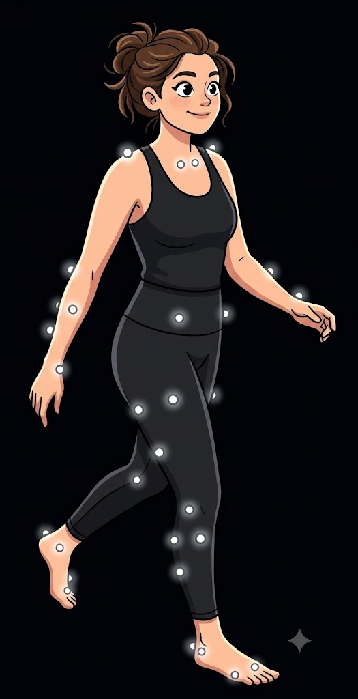
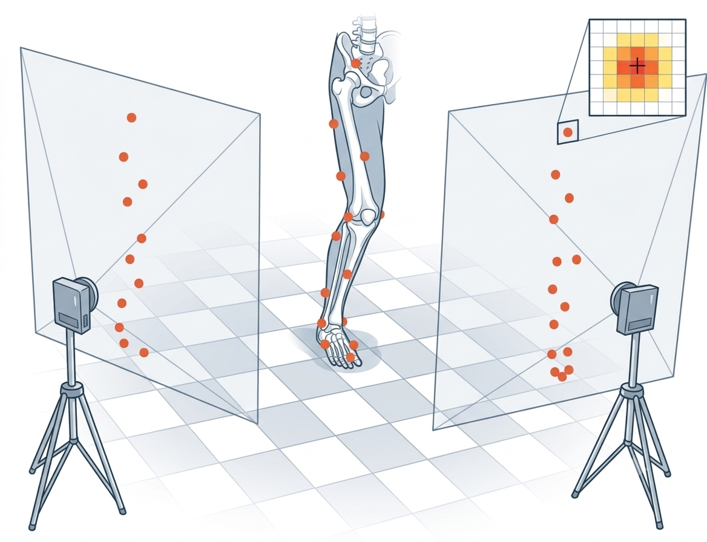
Each rigid body has 3-4 markers to track its pose in 3D.
Camera-based movement tracking
Human movement tracking setup
Each rigid body has 3-4 markers to track its pose in 3D.
Consider three markers \(m_1, m_2\) and \(m_3\) on a rigid body \(B\).
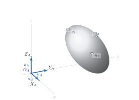
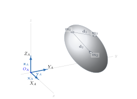
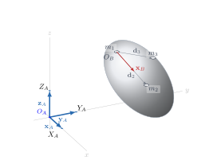
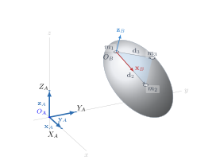
The cameras give \(\v{r}_{m_1}^{A}, \v{r}_{m_2}^{A}, \v{r}_{m_3}^{A}\).
Two vectors in the body \[\v{d}_2 = \v{r}_{m_2}^{A} - \v{r}_{m_1}^{A} \qquad \v{d}_3 = \v{r}_{m_3}^{A} - \v{r}_{m_1}^{A}\]
First axis \(\quad \v{x}_{B}^{A} = \dfrac{\v{d}_2}{\Vert \v{d}_2 \Vert}, \qquad \v{o}_{B}^{A} = \v{r}_{m_1}^{A}\)
Normal to the marker plane \(\quad \v{z}_{B}^{A} = \dfrac{\v{x}_{B}^{A} \times \v{d}_3}{\Vert \v{x}_{B}^{A} \times \v{d}_3 \Vert}\)
Close the frame \(\quad \v{y}_{B}^{A} = \v{z}_{B}^{A} \times \v{x}_{B}^{A}\) \[\v{R}_{B}^{A} = \m{\v{x}_{B}^{A} & \v{y}_{B}^{A} & \v{z}_{B}^{A}}\]
\[\v{o}_{B}^{A} = \v{r}_{m_{1}}^{A}\]
Camera-based movement tracking
Human movement tracking setup
The full 6DOF pose of a rigid body can be tracked with three markers.
\[\v{R}_{B}^{A} = \m{\v{x}_{B}^{A} & \v{y}_{B}^{A} & \v{z}_{B}^{A}} \qquad \v{o}_{B}^{A} = \v{r}_{m_{1}}^{A}\]
6DOF poses of the individual segments give multi-segment kinematics, from which joint kinematics are derived. When we have the rotation matrices \(\v{R}_{B_p}^{A}\) and \(\v{R}_{B_d}^{A}\) of two adjacent segmenets, we can obtain the joint angles as follows:
\[\v{R}_{B_d}^{B_p} = {\v{R}_{B_p}^{A}}^\top\v{R}_{B_d}^{A} \longrightarrow \left( \alpha_{pd}, \beta_{pd}, \gamma_{pd}\right)\]
Assumptions:
- Each segment is a rigid body: one bone, non-deformable. Some “segments” are several bones (forearm: radius and ulna; the foot).
- Markers move with the bone: they sit on skin, which slides, stretches and wobbles over the bone — the soft-tissue artefact, typically the largest error in the chain.
- Joints are ideal rotational joints: hinge or ball-and-socket, with axes fixed in the segments. Real axes shift (the knee), and joints translate a little.
Each of these is a source of error when reconstructing body kinematics.
Camera-based movement tracking
Human movement tracking setup
\[\v{R}_{B_d}^{B_p} = {\v{R}_{B_p}^{A}}^\top\v{R}_{B_d}^{A} \longrightarrow \left( \alpha_{pd}, \beta_{pd}, \gamma_{pd}\right)\]
There are various conventions for describing these joint angles, but an anatomical one is preferred for easy clinical interpretation, e.g. flexion/extension, abduction/adduction, and internal/external rotation.
Anatomical joint angles require appropriate marker placement on the proximal and distal limb segments.
Two sets of markers, or reference frames, are typically employed for this purpose:
- Anatomical reference frame: built from markers on palpable bony landmarks, so its axes have anatomical meaning — but those markers are prone to occlusion during movement.
- Tracking reference frame: built from a cluster of markers placed conveniently on the limb segment; it has no anatomical meaning of its own, so a static calibration trial records where the anatomical frame sits in it.
After Uchida & Delp, Biomechanics of Movement (2021), Ch. 7.
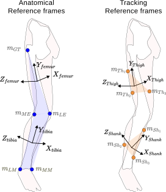
Camera-based movement tracking
Human movement tracking setup
Static calibration is done to find the relationship between the two reference frames:
\[\v{R}_{anatomical}^{tracking}\]
The anatomically relevant joint angles can then be estimated from the tracking reference frames.
\[\v{R}_{tibia}^{femur} = \v{R}_{thigh}^{femur}\v{R}_{lab}^{thigh}\v{R}_{shank}^{lab}\v{R}_{tibia}^{shank}\]
\(\v{R}_{tibia}^{femur}\) can be decomposed into anatomically relevant joint angles.
This process of obtaining the joint angles from the marker measurements, with no other assumptions, is called unconstrained inverse kinematics.
Camera-based movement tracking
Human movement tracking setup
Pros/Cons with unconstrained inverse kinematics:
Pros
- Transparent: every segment pose comes straight from its own markers.
- Ease of implementation: simple and easy to implement with good support.
- Assumes nothing about the joints: whatever the joint does shows up in the result.
Cons
- Anatomical constraints are ignored: nothing imposes the joint structure or fixed segment lengths.
- Soft-tissue artefact passes straight through: nothing constrains it.
- Needs three markers per segment, always: lose one and that segment’s pose is gone for those frames.
- Errors feed into subsequent calculations: errors in joint angles will impact inverse dynamics calculations.
Some of these issues are addressed by the constrained (model-based) inverse kinematics approach: fit a kinematic model with joint constraints to all markers at once, minimising marker error (Lu & O’Connor, 1999). It suppresses artefact and keeps the chain intact, at the price of imposing a joint model that may be incorrect for the given subject.
Camera-based movement tracking
Human movement tracking setup
Constrained inverse kinematics
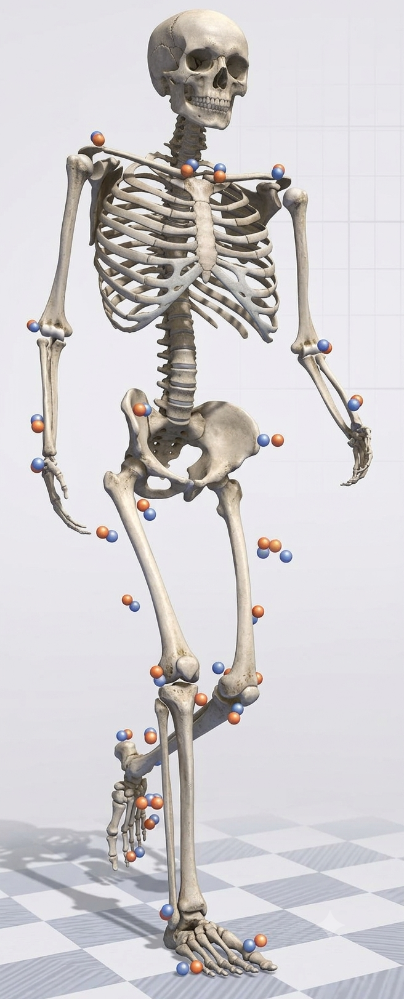
Measured markers (blue) and the model’s markers (orange).
Start from a model of the skeleton: rigid segments of fixed length, joined by joints with a chosen number of DOFs (hinge knee, ball-and-socket hip…). Its configuration is one vector of generalised coordinates \(\v{q}\) — the joint angles themselves.
Markers are placed on the model at the same anatomical spots as on the subject. For any \(\v{q}\), the model predicts where every marker should be: \(\hat{\v{r}}_{m_i}^{A}(\v{q})\).
At each instant, find the pose that puts the model’s markers closest to the measured ones, all at once: \[\v{q}^{*} = \arg\min_{\v{q}} \sum_{i} w_i \left\Vert \v{r}_{m_i}^{A} - \hat{\v{r}}_{m_i}^{A}(\v{q}) \right\Vert^2\] A weighted least-squares fit; the joint constraints are built into the model, so they can never be violated.
What it buys: joint angles come out directly; uncorrelated marker noise is averaged across all markers rather than passed through; a lost marker is tolerated; segments never come apart.
What it costs: the model must first be scaled to the subject; any joint the model gets wrong (a knee that is not a hinge, a lax joint) is forced to behave as the model says — and the residual marker error is the only warning you get; soft-tissue artefact moves markers together, so it is not averaged away — the constraints can only push it into the joint angles the model allows.
Camera-based movement tracking
Unconstrained vs. constrained inverse kinematics
Camera-based movement tracking
Tracking with fiducial markers — what a tag is
A fiducial is a printed pattern with two parts, and each has one job.
The square shape — finds the tag. Four straight edges of a black border, picked out even when small, oblique or partly covered. But every dark square-ish thing passes this test: windows, tiles, the paper it is printed on.
The bits inside — say what it is. Read the 36 cells and check them against the code book: is this a tag at all? (reject the windows), which tag? (thousands of IDs), and which way up? — a bare square is the same turned by 90°, the code is not, so the code says which corner is which.
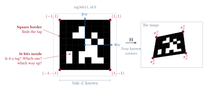
Olson, E. (2011). AprilTag: A robust and flexible visual fiducial system. Proc. IEEE ICRA, 3400–3407.
Camera-based movement tracking
Tracking with fiducial markers — one tag, one camera, full pose
Why a single image is enough. The tag is a plane of known size with four corners at known positions in its own frame \(W\) — and, being flat, every point on it has \(z_W = 0\).
Put that into our camera model: \[\lambda\,\v{r}_p^{S} = \v{K}_f \m{\v{r}_1 & \v{r}_2 & \v{r}_3 & \v{o}_{W}^{C}} \m{x_W \\ y_W \\ 0 \\ 1} = \underbrace{\v{K}_f \m{\v{r}_1 & \v{r}_2 & \v{o}_{W}^{C}}}_{\v{H},\ 3\times3} \m{x_W \\ y_W \\ 1}\]
The third column of \(\v{R}_W^C\) multiplies \(z_W = 0\) and drops out. What is left, \(\v{H}\), is a \(3 \times 3\) map from tag coordinates to pixels — exactly the planar case we met in Zhang’s calibration, with the tag playing the part of the checkerboard.
Counting: each corner gives two equations (its \(x_S\) and \(y_S\)); four corners give eight. \(\v{H}\) has nine entries but is defined only up to scale, so eight unknowns. The four corners determine \(\v{H}\) — and the code has told us which corner is which.
Olson, E. (2011). AprilTag: A robust and flexible visual fiducial system. Proc. IEEE ICRA, 3400–3407.
Camera-based movement tracking
Tracking with fiducial markers — from \(\v{H}\) to the pose
With the camera calibrated, \(\v{K}_f\) is known, and \(\v{H}\) gives back the pose of the tag in the camera: \[\v{K}_f^{-1}\v{H} = c\m{\v{r}_1 & \v{r}_2 & \v{o}_{W}^{C}}\]
- The scale \(c\): the columns of a rotation matrix have unit length, so \(c\) is read off \(\Vert\v{r}_1\Vert\) and \(\Vert\v{r}_2\Vert\).
- The metric: the tag’s printed side \(d\) turns tag units into millimetres — that is how a single camera knows how far away the tag is.
- The missing column: \(\v{r}_3 = \v{r}_1 \times \v{r}_2\), since the columns of a rotation are orthonormal.
- The sign: \(\pm c\) both fit; the tag must be in front of the camera, which picks one.
- Tidying up: noise means \(\m{\v{r}_1 & \v{r}_2 & \v{r}_3}\) is not quite a rotation; nudge it to the nearest one.
So one tag is a complete marker cluster: position and orientation of the segment it is stuck to, from one camera, with no triangulation and no correspondence problem — the tag tells you its own ID.
Olson, E. (2011). AprilTag: A robust and flexible visual fiducial system. Proc. IEEE ICRA, 3400–3407.
Camera-based movement tracking
Tracking with fiducial markers — the steps, live
Camera-based movement tracking
Tracking with fiducial markers — how the detector finds a tag
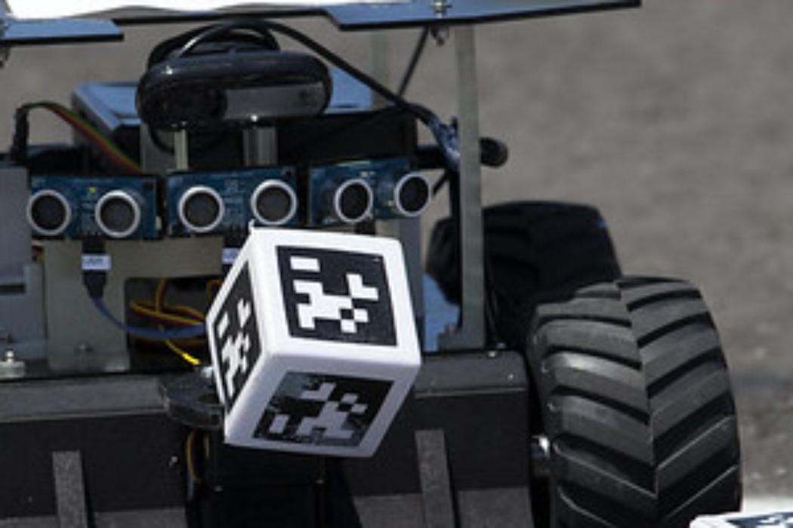
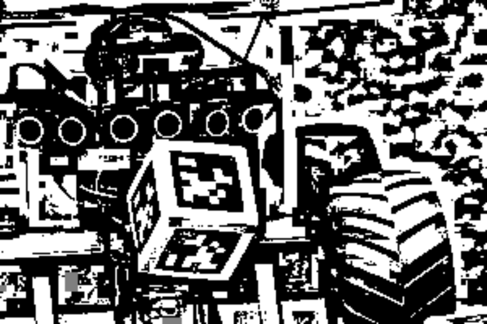
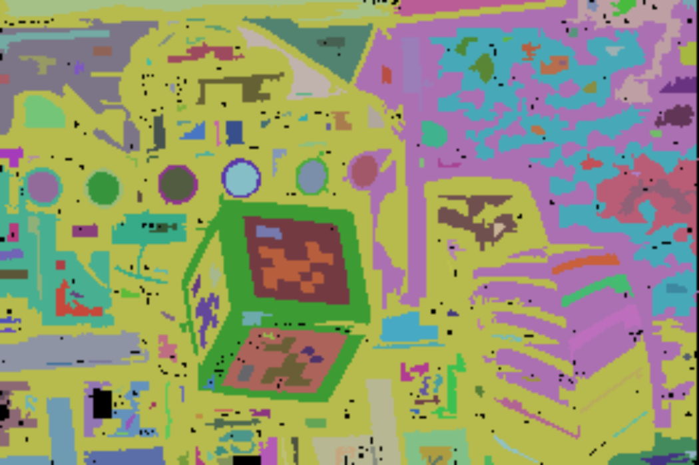
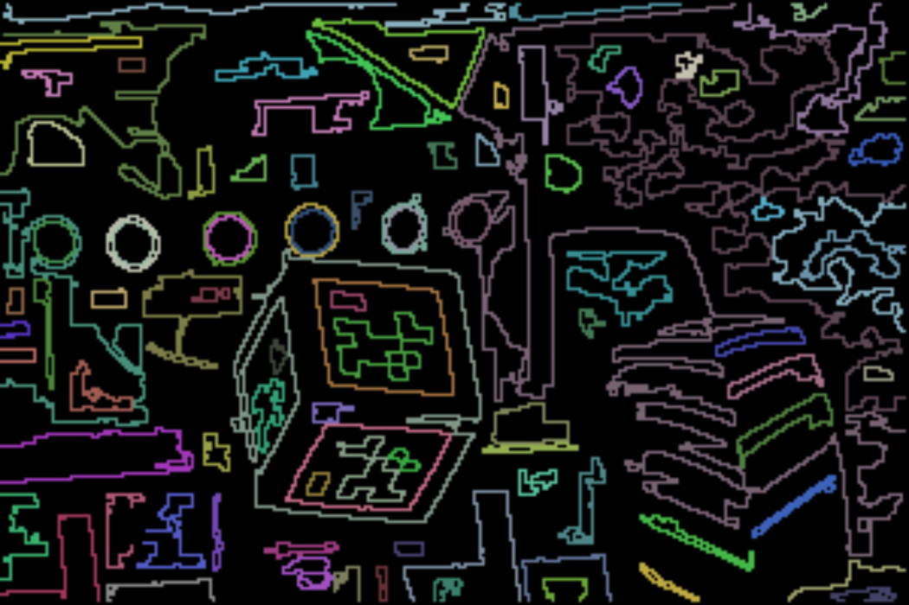
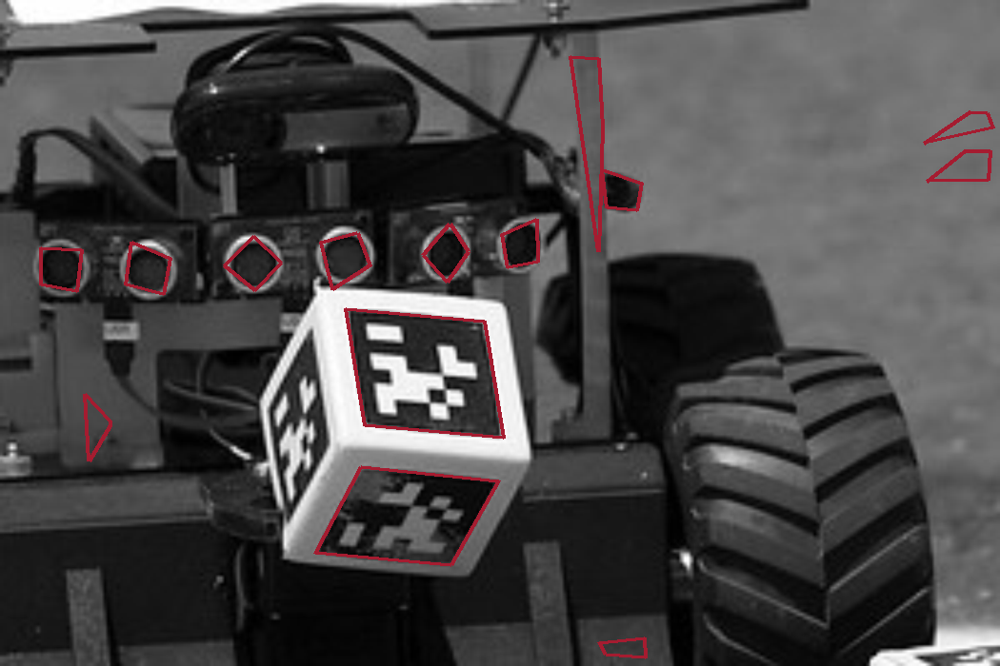
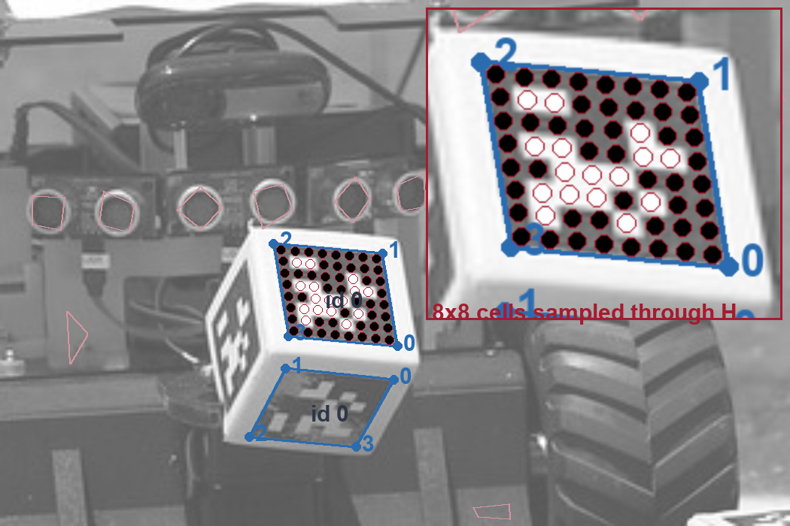
Wang, J. & Olson, E. (2016). AprilTag 2: Efficient and robust fiducial detection. Proc. IEEE/RSJ IROS. Photo: NASA Kennedy, Swarmathon, CC BY-SA 2.0, from the test set of the AprilTag library. Stage images are the library’s own debug output (tag36h11); quads, ids and the sample grid are drawn from its results.
0. The photograph. A robot holding a tagged cube: two tag faces, and some decoys — the round sensor housings, a cable, a tyre. The detector works on the grey-scale image only.
1. Adaptive threshold. Each pixel is called black or white against the darkest and brightest pixels in its own neighbourhood; uneven lighting does not matter. Where the two are too close, flat asphalt, the pixel is left undecided.
2. Connected components. Every blob of black and every blob of white gets a label, one colour each. The tag’s border is one black blob; the quiet zone around it one white blob.
3. Boundaries. The pixels where a black blob meets a white blob, grouped by which pair of blobs they separate. Each closed outline is one candidate for a border.
4. Quads. Each outline is tested for four corners and fitted with four lines. 14 candidates here — the two tag faces, and every sensor housing and cable end that is square-ish enough. The shape alone passes them all.
5. Decode. The homography from each quad’s corners samples the 8 × 8 cells; the 36 bits are matched to the code book. Two accepted, both id 0, with the corner order fixed by the code; the other twelve rejected.
Why this pipeline. The 2011 detector found edges from image gradients and chained line segments into quads. The 2016 redesign replaced that with the threshold-and-components stages above, for speed and better detection of small tags; the tag design and the decode are unchanged.
Camera-based movement tracking
What limits tag tracking — I. Distance
Effect of marker distance on pose estimation
Tag size in image \(s = f d / z\) pixels with pixel error \(\sigma\) pixels.
Example: \(d = 0.10\) m, \(f = 800\) px \(\implies s = 80/z\): 100 px @ 0.8 m, 40 px @ 2 m. \(\implies\) Tag’s \(\text{SNR} \propto \frac{1}{z}\)
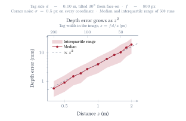
Depth is computed from the tag’s image size \[z = \frac{f d}{s} \;\Rightarrow\; \delta z = -\frac{f d}{s^2}\,\delta s = -\frac{z^2}{f d}\,\delta s\] \[|\delta z| \approx \frac{\sigma\, z^2}{f d}\]
Double the distance, four times the depth error.
Projected corners with 0.5 px of Gaussian noise, pose by the closed form and refinement, median and interquartile range of 500 runs.
Camera-based movement tracking
What limits tag tracking — I. Distance
How a tilt shows up in the image
Foreshortening: a length seen at an angle looks shorter.
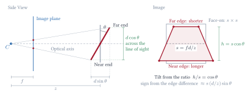
- Tag’s height \(d\) becomes \(d\cos\theta\) and its width at the centre is still \(s = fd/z\).
- The tilt is read from the ratio of two pixel lengths, \(h/s = \cos\theta\).
- The top and bottom edges sit at depths \(z \mp \tfrac{d}{2}\sin\theta\). The difference between the near and far edges is \(\approx s\,(d/z)\sin\theta\).
Camera-based movement tracking
What limits tag tracking — I. Distance
Effect of marker distance on pose estimation
Same tag, same camera, same noise: \(s = 80/z\) px and \(\sigma = 0.5\) px.
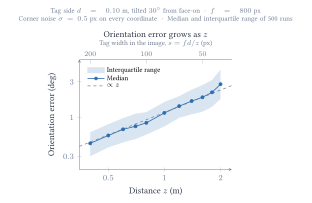
Orientation comes from foreshortening: the tilt is read from the ratio \(h/s = \cos\theta\) of two pixel lengths, each off by about \(\sigma\): \[\delta(\cos\theta) \approx \frac{\sigma}{s} \;\Rightarrow\; \delta\theta \approx \frac{\sigma}{s\,\sin\theta} \;\propto\; \frac{\sigma\, z}{f d}\] Double the distance, twice the orientation error — gentler than depth. At \(30^\circ\) and 100 px: \(2 \times 0.5/100\) rad \(\approx 0.6^\circ\); the simulation gives \(0.85^\circ\).
Projected corners with 0.5 px of Gaussian noise, pose by the closed form and refinement, median and interquartile range of 500 runs.
Camera-based movement tracking
What limits tag tracking — II. Face-on
Change the tilt by 5°. How much does the picture change?
The same 100 px tag, drawn from the camera model at six tilts about its horizontal axis.
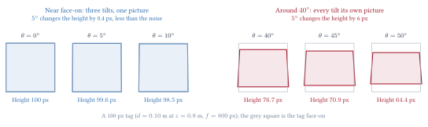
At tag face-on: \(\cos\theta = h/s\). Tag’s true height 100 px, measured 99.5 px because of the noise. \(\cos\theta = 0.995 \implies \theta = 5.7°\).
At an oblique angle:: At 40°, true height 76.7 px, measured 76.2 px: \(\theta = 40.4°\).
This is Module 1’s rule. A sensor gives \(y = \mathcal{F}(x_m) + e_n\) and the noise referred back to the measurand is \(e_n \big/ \frac{\partial \mathcal{F}}{\partial x_m}\). Tag height \(h = s\cos\theta\), the measurand is \(\theta\), the sensitivity is \(\partial h/\partial\theta = -s\sin\theta\) and the noise is \(\sigma\), so \(\delta\theta \approx \sigma/(s\sin\theta)\) A face-on tag has zero sensitivity.
Camera-based movement tracking
What limits tag tracking — II. Face-on
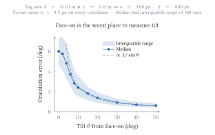
The simulation agrees. Orientation error against tilt for the same tag, with the same corner noise as before.
Error \(\approx\) noise \(\div\) sensitivity: \[\delta\theta \;\approx\; \frac{\sigma}{s\,\sin\theta}\]
The dashed line is this law; it tells us to expect the error to go up as the tag becomes more face-on.
Same model as the distance slides, tag fixed at 0.8 m.
Camera-based movement tracking
What limits tag tracking — III. Edge-on
Turn the tag towards edge-on. What happens to the cells?
The real tag pattern, projected through the camera model at five tilts, with the grid of 1 px squares drawn over it. A small tag, 4 px per cell face-on, so that the pixels can be seen.
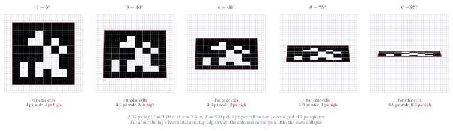
- Both directions change, but not alike. The columns converge by a small amount 4 px to 3.9 px. The rows collapse by \(\cos\theta\): 4 px, 3 px, 2 px, 1 px, 0.3 px.
- Once a row is squeezed to very few pixels, lens blur will average neighbouring black and white cells to grey, impacting payload detection.
Camera-based movement tracking
What limits tag tracking — III. Edge-on
With increasing tilt, reading of the payload bits worsens.
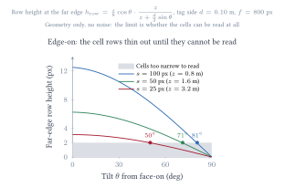
The height of the far row, for three sizes of tag in the image (tags are at different distances).
Usable tilt depends on the tag’s image size: about 80° for 100 px, 70° for 50 px, 50° for 25 px. Olson’s 70° is this number for his camera and tag.
Geometry only; the 2 px threshold is roughly twice a typical lens blur. Figure source: limit-oblique.tex.
Camera-based movement tracking
What limits tag tracking — IV. Motion blur
Move the tag during the exposure. What happens to the cells?
The same tag as before, tilted 30°, sliding sideways while the shutter is open. Each pixel records the average of everything that passed over it.
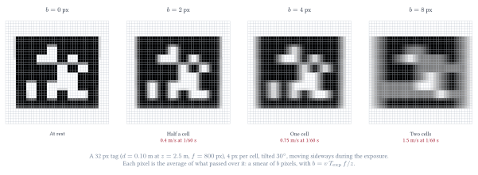
With exposure \(T_{\mathrm{exp}}\) a tag moving at \(v\) across the view travels \(v\,T_{\mathrm{exp}}\) metres, which is \(b = v\,T_{\mathrm{exp}}\,f/z\) pixels in the image. Every edge becomes a ramp \(b\) pixels long.
Tag corners may still be found, but will introduce pose estimation errors due to errors in corner detection.
Payload detection errors occur because the payload cells get averaged out.
Inertial measurement units
What an IMU is
An inertial measurement unit (IMU) is a chip carrying three-axis accelerometers and three-axis gyroscopes, one of each along every axis of the chip’s own frame \(S\) \(\longrightarrow\) a 6DOf sensor!
Most sensors also carry a three-axis magnetometer \(\longrightarrow\) a 9 DOF sensor! Its often referred to as a MARG (magnetic, angular rate and gravity) sensor.
Reports six numbers, typically a few hundred times a second:
- \(\v{a}_S^S(t)\): accelerometers output in the sensor frame.
- \(\boldsymbol{\omega}_S^S(t)\): gyroscope’s output in the sensor frame.
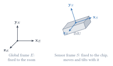
No reference outside the chip.
- A camera measures a marker against its fixed camera frame.
- An encoder measures a shaft against its housing.
- An IMU measures a proof mass against its own case, and expresses it in the case’s own axes.
Inertial measurement units
Accelerometer — the mechanism
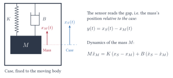
The sensor output is \(y = x_S - x_M\), the thing the plates measure, with \(a_S = \ddot{x}_S\) the acceleration of the case: \[M\ddot{y} + B\dot{y} + K y = M\,a_S \qquad\Longrightarrow\qquad \frac{Y(s)}{A_S(s)} = \frac{M}{Ms^2 + Bs + K}\]
Inertial measurement units
Accelerometer — what the model says
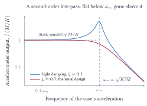
Two useful numbers from the transfer function: \[\frac{Y(s)}{A_S(s)} = \frac{M}{Ms^2 + Bs + K}\]
- Static sensitivity \(= M/K\).
- Natural frequency \(\omega_n = \sqrt{K/M}\).
We ideally want both to be high, which we cannot because the two are one number!
Sensitivity and bandwidth are not a trade-off, they are an identity. Static sensitivity is \(M/K\) and \(\omega_n^2 = K/M\), so
\[\text{sensitivity} = \frac{1}{\omega_n^2}\]
for any mass and any spring. Choosing the bandwidth fixes the gap, and no choice of \(M\) escapes it.
MEMS parts choose bandwidth: \(\omega_n\) of a few kilohertz, flat over anything a limb does, and therefore a displacement of tens of nanometres per \(g\).
Module 1 again: we only need to do static calibration to find out the static sensitivity; the sensor’s dynamics can be ignored for human movements.
Inertial measurement units
Accelerometer — gravity is in the signal
The spring cannot tell the difference between the case accelerating upward and the case sitting still while gravity pulls the mass down. So the accelerometer reports, in its own frame, \[\v{a}_S^S(t) = \v{R}_E^S(t)\left(\v{a}_S^E(t) - \v{g}^E\right)\]
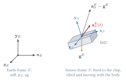
Two consequences:
- At rest it does not read zero. It reads \(+1\,g\) pointing up, along whichever of its axes happens to be up.
- The reading depends on the orientation \(\v{R}_E^S\) of the chip, which the chip does not know.
Both problems are addressed if \(\v{R}_E^S(t)\) is known. \[ \v{a}_{S}^{E}(t) = \left(\v{R}_{E}^{S}(t)\right)^\top \v{a}_{S}^{S}(t) + \v{g}_{}^{E}\]
Undo the rotation, remove the effect of gravity to obtain the linear acceleration.
Inertial measurement units
Accelerometer — using gravity to estimate orientation
Accelerometer as a tilt-sensor
\[\v{a}_S^S(t) = \v{R}_E^S(t)\left(\v{a}_S^E(t) - \v{g}^E\right)\]
When there is no or little linear acceleration, \(\Vert \v{a}_{S}^{E}(t) \Vert_2 \approx 0\), so
\[\v{a}_S^S(t) = - \v{R}_E^S(t)\, \v{g}^E\]
- Three equations, but only two are independent: \(\Vert \v{a}_S^S \Vert_2 = \Vert \v{g}^E \Vert_2\).
- \(\v{R}_E^S(t)\) is characterized by three angles, only two can be determined: pitch and roll; yaw cannot be determined.
Inertial measurement units
Accelerometer — using gravity to estimate orientation
Orientation estimation with 2-axis Accelerometer
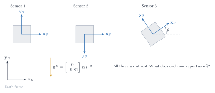
Sensor 1: \(\v{R}_E^S = \v{I}\) \[\v{a}_S^S = -\v{g}^E = \m{0 \\ 9.81}\]
Sensor 2: \(y_S\) points down \[\v{a}_S^S = \m{0 \\ -9.81}\]
Sensor 3: turned by \(\theta\) \[\v{a}_S^S = 9.81\m{\sin\theta \\ \cos\theta}\]
Sensor 3 is the interesting one: the reading contains \(\theta\). Turn it around and a still accelerometer is a tilt sensor.
Inertial measurement units
Accelerometer — tilt from a still sensor
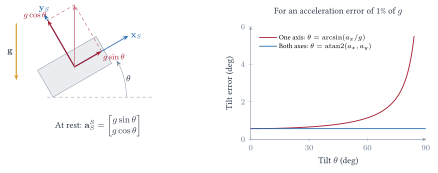
Invert the reading of Sensor 3. Two ways:
- One axis: \(\theta = \arcsin(a_x / g)\). Sensitivity \(\partial a_x/\partial\theta = g\cos\theta\), which goes to zero as the axis approaches vertical. The same slope problem as the face-on tag: near \(90^\circ\) a small error in \(a_x\) is a large error in \(\theta\).
- Both axes: \(\theta = \operatorname{atan2}(a_x, a_y)\). Sensitivity \(g\) everywhere, and \(g\) itself drops out of the ratio. Always do this.
Inertial measurement units
Accelerometer — kinematic tracking
How do we use the accelerometer to track movement kinematics?
Accelerometers do not provide position kinematics directly. After correct for the sensor’s orientation, we still only get the linear acceleration - the second derivative of position.
\[\v{a}_S^S(t) = \v{R}_E^S(t)\left(\v{a}_S^E(t) - \v{g}^E\right)\]
Assuming we have perfect knowledge of the sensor’s orientation \(\v{R}_{E}^{S}(t)\), we have
\[ \v{a}_{S}^{E}(t) = \left(\v{R}_{E}^{S}(t)\right)^\top \v{a}_{S}^{S}(t) + \v{g}_{}^{E} = \v{\ddot{r}}_{S}^{E}(t)\]
To obtain the position kinematics we simply need to double integrate the acceleration, with the initial position and velocity at some initial time \(t_0\).
\[ \begin{split} \v{\dot{r}}_{S}^{E}(t) &= \int_{t_0}^{t} \v{a}_{S}^{E}(t) dt + \v{\dot{r}}_{S}^{E}(t_0) \\ \v{r}_{S}^{E}(t) &= \int_{t_0}^{t} \v{\dot{r}}_{S}^{E}(t) dt + \v{r}_{S}^{E}(t_0) \\ \end{split} \]
Inertial measurement units
Accelerometer — true signal model
Model of an actual accelerometer
A real accelerometer reports the specific force with a bias, a noise term, and an error in the axes:
\[\tilde{\v{a}}_{S}^{S}(t) = \v{T}\,\v{R}_{E}^{S}(t) \left(\v{a}_{S}^{E}(t) - \v{g}^{E}\right) + \v{b}_{a} + \v{e}_{a}\]
Bias \(\v{b}_{a}\), in m\(g\): added after everything, so the same three numbers in every orientation.
- Asymmetry in the proof mass and plates, and package stress from soldering and mounting (tens to about \(100\) m\(g\) out of the box). This is fixed per device.
- Turn-on repeatability, a few m\(g\) between power cycles. This is fixed per run.
- Temperature sensitivity \(\approx 1\) m\(g\) per \(^\circ\)C and in-run instability, \(1/f\) noise of a few hundred \(\mu g\). These are slowly varying components.
Misalignment and non-orthogonality \(\v{T}\): the sensing axes are not quite at right angles to each other or to the package (about \(1^\circ\)), and the package is not quite aligned with the segment it is fixed to (can be \(10^\circ\) or more). In any one orientation this adds a constant to the reading, so it cannot be distinguished from a bias. Turn the sensor and the contribution of misalignment changes; a bias would not.
Noise \(\v{e}_{a}\): white, quoted on the datasheet as a density per \(\sqrt{\mathrm{Hz}}\).
Static calibration at the start of a session removes the fixed and turn-on parts; a settled chip removes most of the temperature part. What remains is irrelevant for tilt and decisive for anything integrated.
Inertial measurement units
Accelerometer — bias, misalignment, and what calibration removes
Inertial measurement units
Accelerometer — can it give position?
Inertial measurement units
Gyroscope — the principle
Inertial measurement units
Gyroscope — the Coriolis force, in the sensor frame
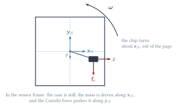
Everything below is written in the sensor frame \(S\), which turns with the chip at \(\boldsymbol{\omega} = \m{0 \\ 0 \\ \omega}\).
The mass is driven along \(\mathbf{x}_S\) at the drive frequency \(\omega_d\): \[\mathbf{r}_d(t) = \m{A\sin\omega_d t \\ 0 \\ 0} \qquad \dot{\mathbf{r}}_d(t) = \m{A\omega_d\cos\omega_d t \\ 0 \\ 0}\]
In a turning frame a moving mass feels the Coriolis force: \[\mathbf{f}_c = -2m\,\boldsymbol{\omega}\times\dot{\mathbf{r}}_d = -2m \m{0 \\ 0 \\ \omega} \times \m{A\omega_d\cos\omega_d t \\ 0 \\ 0} = \m{0 \\ -2m\,\omega A\omega_d\cos\omega_d t \\ 0}\] Along \(\mathbf{y}_S\) only, proportional to \(\omega\), alternating at \(\omega_d\) because the drive velocity does.
Inertial measurement units
Gyroscope — the Coriolis force, in the sensor frame
Along \(\mathbf{y}_S\) the mass hangs on its sense springs, a second-order system tuned to \(\omega_s = \omega_d\), so the force produces a perturbation \(\mathbf{r}_c\) along that axis: \[m\ddot{y} + c\dot{y} + k_y y = -2m\,\omega A\omega_d\cos\omega_d t \,\, \Longrightarrow \,\, \mathbf{r}_c(t) = \m{0 & -\dfrac{2Q\,\omega}{\omega_s}\,A\sin\omega_d t & 0}^\top, \quad Q = \frac{\sqrt{k_y m}}{c}\]
The mass’s position is the drive plus the perturbation: \[\mathbf{r}(t) = \mathbf{r}_d(t) + \mathbf{r}_c(t) = A\sin\omega_d t \m{1 & -2Q\omega/\omega_s & 0}^\top\]
A straight-line vibration, tilted from \(\mathbf{x}_S\) by \(\arctan(2Q\omega/\omega_s)\). The \(y\) amplitude is the size of \(\omega\); its sign, \(0^\circ\) or \(180^\circ\) against the drive, is the direction. The electronics pick out the \(y\) motion at the drive frequency, in or out of phase with the drive, and turn its amplitude into a voltage per \(^\circ\)/s.
How small is this? In the first single-chip MEMS gyroscope, the drive was \(7\ \mu\)m peak to peak at \(15\) kHz. The full-scale Coriolis movement at \(150^\circ\)/s was less than \(2\) Å, about one hydrogen atom, a capacitance change of \(120\) aF (\(10^{-18}\) F). The displacement is read capacitively, as in the accelerometer.
Geen, Sherman, Chang & Lewis (2002). Single-chip surface micromachined integrated gyroscope with 50°/h Allan deviation. IEEE J. Solid-State Circuits 37(12), 1860–1866.
Inertial measurement units
Gyroscope — the measured signal
The gyroscope measures the angular rotation of the sensors with respect to the sensor frame. \[\boldsymbol{\omega}_S^S(t) = \v{R}_E^S(t) \boldsymbol{\omega}_{S}^{E}(t)\]
The gyroscope does not pick-up any linear kinematics information or gravity.
Just like the accelerometer, knowledge of the orientation of the sensor is required to know the angular velocity of the sensors with respect to the earth fixed reference frame. \[\boldsymbol{\omega}_E^S(t) = \left(\v{R}_E^S(t)\right)^\top \boldsymbol{\omega}_{S}^{S}(t)\]
Inertial measurement units
Gyroscope — from rate to angle
To get an angle, integrate: for one axis, \[\theta(t) = \theta(0) + \int_0^t \omega(\tau)\,\mathrm{d}\tau\]
Integration keeps every error in the rate and adds it up. An error in the initial angle stays. A bias \(b\) becomes \(b\,t\) and grows without limit. Noise becomes a random walk, growing as \(\sqrt{t}\).
The plot shows the last two. A residual bias of \(0.1^\circ\)/s, small by consumer standards, is \(6^\circ\) a minute.
One integration, not two, so the bias grows as \(t\) rather than \(t^2\). Better than the accelerometer’s position, but still unbounded.
Inertial measurement units
Gyroscope — true signal model
Model of an actual gyroscope
A real gyroscope reports the angular velocity with a bias, a noise term, and an error in the axes. The same form as the accelerometer, without gravity:
\[\tilde{\boldsymbol{\omega}}_{S}^{S}(t) = \v{T}\,\v{R}_{E}^{S}(t)\,\boldsymbol{\omega}_{S}^{E}(t) + \v{b}_{g} + \v{e}_{g}\]
Bias \(\v{b}_{g}\), in \(^\circ\)/s: added after everything, so the same three numbers in every orientation, moving or still.
- The drive leaks into the sense axis through imperfect springs, and the electronics reject it imperfectly. Consumer parts quote up to a few \(^\circ\)/s out of the box. This is fixed per device.
- Turn-on repeatability, a fraction of a \(^\circ\)/s between power cycles. This is fixed per run.
- Temperature sensitivity, of order \(0.01\) to \(0.1\ ^\circ\)/s per \(^\circ\)C, and in-run instability of tens of \(^\circ\)/h. These vary slowly during a session.
Misalignment and non-orthogonality \(\v{T}\): the same \(1^\circ\) inside the chip and up to \(10^\circ\) or more from mounting as the accelerometer. A turn about one axis leaks into the others in proportion to the rate: \(1^\circ\) leaks \(1.7\%\), \(10^\circ\) leaks \(17\%\). Unlike the accelerometer, this is invisible when the sensor is still, because there is no gravity to expose it.
Noise \(\v{e}_{g}\): white, quoted on the datasheet as a density in \(^\circ\)/s per \(\sqrt{\mathrm{Hz}}\). Integrated, it becomes the angle random walk, quoted in \(^\circ/\sqrt{\mathrm{h}}\).
Static calibration is simpler than for the accelerometer: a still sensor should read exactly zero. It removes the fixed and turn-on parts. What remains is irrelevant for rate and decisive for angle.
Inertial measurement units
Gyroscope — angle from a real gyroscope
Inertial measurement units
Can an IMU (accl + gyro) measure orientation?
We have two ways to get the orientation of a segment, and we have seen both fail.
Tilt from the accelerometer
- Gravity is an absolute reference, always there. No starting angle is needed. The estimate never drifts.
- The sensor cannot tell gravity from the segment’s own acceleration, so the estimate is wrong whenever the segment moves.
- Rotation about the vertical leaves gravity unchanged, so it is invisible.
Angle from the gyroscope
- The rate is measured directly, moving or still, about any axis.
- The estimate follows fast movement faithfully.
- It has to be integrated from a known starting angle.
- Every error in the rate accumulates: a residual bias of \(0.1^\circ\)/s is \(6^\circ\) a minute.
| Accelerometer tilt | Integrated gyro angle | |
|---|---|---|
| Short term | Wrong whenever large linear acceleration | Works well |
| Long term | Works well as soon as the segment has no linear acceleration | Drifts away |
| Reference | Gravity, absolute | Requires the starting angle, relative |
The two fail in opposite ways. Can the data from both be used to do a little better than either?
Inertial measurement units
Putting the two together – Complementary filter
Sensor fusion is any rule that takes the gyro for the fast part and the accelerometer for the slow part. The simplest one, the complementary filter, in one line per sample: \[\hat\theta_k = \alpha\left(\hat\theta_{k-1} + \omega_k\,\Delta t\right) + (1 - \alpha)\,\theta^{\text{acc}}_k, \qquad \alpha \approx 0.98\] Mostly the gyro, pulled gently back towards gravity. A Kalman filter is the same idea with the weights chosen from the noise levels instead of by hand.
Inertial measurement units
Orientation of a swinging link: accelerometer, gyroscope, and the two together
Inertial measurement units
IMUs and MARGs in 3D
In 3D, gravity fixes two of the three angles, pitch and roll. Rotation about the vertical, the yaw, is invisible to it. The gyroscope measures the yaw rate, but the integrated yaw drifts without limit.
A MARG adds a three-axis magnetometer.
The Earth’s magnetic field does for heading what gravity does for tilt: a fixed vector in the earth frame, roughly horizontal and pointing north, that the sensor measures in its own frame.
Its horizontal component gives the heading, and the same complementary filter pulls the integrated yaw towards it.
The sensor: a magnetic field sensor per axis, reading a field of a few tens of microtesla. We meet the Hall sensor when we measure flow, and look at how it works there.
The weak reference. Gravity is the same everywhere in the room.
The magnetic field is not: steel in a bed frame, a motor, a wheelchair or the building bends it by tens of degrees, and so bends the heading.
Heading from a MARG indoors is the least trustworthy number the chip gives you.
Inertial measurement units
A still MARG: what each sensor fixes
Sensor still, accelerometer and magnetometer in the same frame \(S\). The Earth frame has \(\v{y}_E\) up and \(\v{x}_E\) along the Earth’s field, north. Each sensor reports a fixed Earth vector, seen from \(S\): \[\tilde{\v{a}}^S = \v{R}_E^S\left(-\v{g}^E\right) = G\,\v{R}_E^S\m{0 \\ 1 \\ 0}, \qquad \tilde{\v{m}}^S = \v{R}_E^S\,\v{m}^E = B\,\v{R}_E^S\m{1 \\ 0 \\ 0}\]
Accelerometer alone. \(\hat{\v{u}} = \tilde{\v{a}}/|\tilde{\v{a}}|\) is the direction of up, seen from \(S\): a unit vector, two numbers. Any rotation about the vertical leaves it unchanged, so pitch and roll are fixed and yaw is free.
Magnetometer alone. \(\hat{\v{m}} = \tilde{\v{m}}/|\tilde{\v{m}}|\) is the direction of the field, seen from \(S\): again two numbers. Any rotation about the field axis leaves it unchanged. Two angles are fixed, but a different two, mixing tilt and heading.
Together. Two directions that are not parallel fix the whole rotation. Build the Earth axes as seen from \(S\): \[\v{x}_E^S = \hat{\v{m}}\ \text{(north)}, \qquad \v{y}_E^S = \hat{\v{u}}\ \text{(up)}, \qquad \v{z}_E^S = \hat{\v{m}}\times\hat{\v{u}}\ \text{(east)}, \qquad \v{R}_E^S = \m{\v{x}_E^S & \v{y}_E^S & \v{z}_E^S}\] All three angles follow from \(\v{R}_E^S\). Four numbers in, three angles out, with one left over to check that the two sensors agree: \(\hat{\v{u}}\) and \(\hat{\v{m}}\) should be at right angles.
Inertial measurement units
A still MARG: what each angle does to each reading
Inertial measurement units
A joint angle from two IMUs
Fuse each IMU to get its orientation in the earth frame, \(\v{R}_{S_1}^E\) on the thigh and \(\v{R}_{S_2}^E\) on the shank. The orientation of one chip relative to the other is \[\v{R}_{S_2}^{S_1} = \left(\v{R}_{S_1}^E\right)^\top \v{R}_{S_2}^E\] and the knee angle is read from it, exactly as it was read from the two marker-defined segment frames earlier in this module.
Two things this quietly assumes.
- The chip’s axes are the segment’s axes. They are not: the chip is stuck on wherever the strap holds, at some unknown angle to the bone. This is the sensor-to-segment alignment problem, solved by a calibration pose or movement, and it is the largest error in IMU joint angles in practice.
- Both headings share a reference. They do only if both magnetometers see the same, undisturbed field. Flexion and extension, about a horizontal axis, survive a bad heading; rotation and abduction do not.
And the strap is skin. Soft-tissue artefact applies to an IMU as it does to a marker, with the added twist that the IMU feels the strap’s own vibration as acceleration.
Inertial measurement units
Position from an IMU: the steps
The sensor reports, at each sample \(k\) with spacing \(\Delta t\), a rate \(\tilde{\boldsymbol{\omega}}_k\) and a specific force \(\tilde{\v{a}}_k\), both in its own frame. To get where it is, four steps, each feeding the next.
1. Orientation. Integrate the gyroscope, corrected by the accelerometer and magnetometer, to get the sensor’s orientation in the earth frame: \[\v{R}_{S}^{E}(k) \leftarrow \v{R}_{S}^{E}(k-1),\ \tilde{\boldsymbol{\omega}}_k,\ \tilde{\v{a}}_k,\ \tilde{\v{m}}_k \qquad \text{(the complementary filter, in 3D)}\]
2. Acceleration in the earth frame. Rotate the specific force out of the sensor frame and put gravity back: \[\v{a}^E_k = \v{R}_S^E(k)\,\tilde{\v{a}}_k + \v{g}^E, \qquad \v{g}^E = \m{0 \\ -G \\ 0}\]
3. Velocity. Integrate once, from a known start, usually the sensor held still: \[\v{v}_k = \v{v}_{k-1} + \v{a}^E_k\,\Delta t, \qquad \v{v}_0 = \v{0}\]
4. Position. Integrate again, from a known starting point: \[\v{p}_k = \v{p}_{k-1} + \v{v}_k\,\Delta t, \qquad \v{p}_0 \ \text{known}\]
Every error in steps 1 and 2 passes through two integrations. An orientation error in step 1 leaks gravity into step 2 as if it were acceleration. The next slides ask how long this can be trusted.
Inertial measurement units
Position from an IMU in 2D: orientation fused, then integrated twice
Inertial measurement units
Can we reconstruct a position trajectory from the gyroscope and the accelerometer?
Can we reconstruct a position trajectory from the gyroscope and the accelerometer?
On paper, yes: the four steps of the last slide. In the end, position is the specific force rotated, gravity removed, integrated twice: \[\v{p}(t) = \v{p}(0) + \int_0^t\!\!\int_0^\tau \left(\v{R}_S^E\,\tilde{\v{a}}_S^S + \v{g}^E\right)\mathrm{d}\tau'\,\mathrm{d}\tau\]
Two things go wrong, and both grow as \(t^2\).
- Accelerometer bias: \(\tfrac{1}{2}b\,t^2\). The plot: a still sensor with \(10\) mg of residual bias is \(5\) cm out after one second and \(5\) m after ten.
- Orientation error: tilt the estimated frame by \(\epsilon\) and gravity leaks into the horizontal as \(g\sin\epsilon\), about \(0.17\ \mathrm{m\,s^{-2}}\) per degree. One degree of fused orientation error is \(9\) cm after one second and \(9\) m after ten. A gyro drift of \(0.1^\circ\)/s makes that degree in ten seconds.
So, no. Not for more than a second or two, and not without something else to reset it: a camera, a foot known to be flat on the floor at each step, a known start and end point. An IMU’s strength is orientation. Its position is a by-product that should not be trusted on its own.
Inertial measurement units
Calibration you do yourself
- Gyro bias: Keep the sensor still for ten seconds. Average each axis and subtract the average from later readings. Do this before every session, because the bias changes with temperature. Repeat it whenever the sensor is at rest, because the bias drifts.
- Accelerometer bias and axes: Use the six-position test. Lay the sensor still on each of its six faces. Average a few seconds of readings on each face. Solve the six averages for \(\v{b}_a\) and \(\v{T}\). The next slide gives the maths.
- Check, do not assume: After calibration, hold the sensor still in any orientation. The magnitude \(\|\v{a}_S^S\|\) must be \(g\). If it is not, the axes are not at right angles or the scale factors are wrong.
Inertial measurement units
Accelerometer calibration — why six faces
The sensor is at rest in pose \(i\). The direction of “up” in the sensor frame, \(\v{u}_i\), is known. The model of the real accelerometer reduces to
\[\tilde{\v{a}}_i = g\,\v{T}\,\v{u}_i + \v{b}_a\]
Counting: \(\v{T}\) has nine unknowns and \(\v{b}_a\) has three. Each pose gives three equations. So four poses are enough, if the four directions \(\v{u}_i\) do not lie in one plane.
Six faces: \(\v{u} = \pm\v{e}_x, \pm\v{e}_y, \pm\v{e}_z\). Each pair of opposite faces gives one column of \(\v{T}\) and one estimate of \(\v{b}_a\):
\[\v{b}_a = \tfrac{1}{2}\left(\tilde{\v{a}}_{+x} + \tilde{\v{a}}_{-x}\right), \qquad \v{T}\,\v{e}_x = \tfrac{1}{2g}\left(\tilde{\v{a}}_{+x} - \tilde{\v{a}}_{-x}\right)\]
The \(y\) and \(z\) pairs work the same way. The diagonal of \(\v{T}\) holds the scale factor of each axis. The off-diagonal entries hold the cross-axis leakage.
Why six and not four: redundancy. Six faces give eighteen equations for twelve unknowns. Every parameter comes from one pair in closed form. Three estimates of \(\v{b}_a\) must agree. Four well-chosen faces would do. Six is the version you cannot get wrong.
Inertial measurement units
Accelerometer calibration — what the six faces assume
The test takes the directions \(\v{u}_i\) to be \(\pm\v{e}_x, \pm\v{e}_y, \pm\v{e}_z\). This is true only if the surface is level. A tilted surface is a rotation \(\v{R}_\delta\) by \(\delta\) about an axis in the plane of the table. The true reading is
\[\tilde{\v{a}}_i = g\,\v{T}\,\v{R}_{\delta,i}\,\v{u}_i + \v{b}_a\]
The table does not change between poses. \(\v{R}_{\delta,i}\) is the tilt as the sensor sees it, in sensor coordinates.
Suppose it were the same rotation in every pose, \(\v{R}_{\delta,i} = \v{R}_\delta\). The test would then return \(\v{T}\v{R}_\delta\) with the correct \(\v{b}_a\). The tilt is absorbed into the axes.
The sensor is turned over between faces. In 3D there are two ways to do that:
Inertial measurement units
Accelerometer calibration — what the six faces assume
The first turn gives \(\v{u}_- = -\v{u}_+\), and the pair cancels. The second turn gives \(\tfrac{1}{2}\left(\tilde{\v{a}}_{+x} + \tilde{\v{a}}_{-x}\right) = \v{b}_a + g\sin\delta\;\v{T}\v{e}_y\). The bias estimate is then wrong at first order in \(\delta\). The three estimates of \(\v{b}_a\) no longer agree.
Level the surface with a spirit level. Turn the sensor the same way each time. If the three bias estimates disagree, suspect the surface first.
Two checks verify the calibration. The first uses the six readings you already have. The second needs one more pose.
- The three pairs give three estimates of the bias, \(\hat{\v{b}}_a^{(x)}, \hat{\v{b}}_a^{(y)}, \hat{\v{b}}_a^{(z)}\). They must agree to within a few m\(g\).
- Disagree: the surface was not level.
- Agree: the surface was level, or the sensor was turned carefully and the tilt went into \(\v{T}\). Agreement does not prove a level surface.
- Hold the sensor still in an orientation the test did not use. Correct the reading, \(\hat{\v{a}} = \hat{\v{T}}^{-1}\left(\tilde{\v{a}} - \hat{\v{b}}_a\right)\). The magnitude \(\|\hat{\v{a}}\|\) must be \(g\). This checks the scale factors and the right angles between axes. It does not check orientation, because a rotation does not change the magnitude.
Inertial measurement units
The lab’s IMU: MPU-9250, what is inside the package
Three accelerometers, three gyroscopes and three magnetometers sit in one 3 mm package. Each has its own ADC. The chip stores the readings in registers. A microcontroller reads them over I²C or SPI.
The sensing axes are fixed to the package. The dot marks pin 1. The arrows give the positive direction for each axis and for each rotation. This is the sensor frame \(S\) in all our equations.
InvenSense, MPU-9250 Product Specification, rev. 1.0, 2014, section 4.4 and figure 4.
Inertial measurement units
The lab’s IMU: MPU-9250, the pins you will use
Twenty-four pins, and you connect six of them.
| Pin | Name | What it does |
|---|---|---|
| 13 | VDD | Power supply, 2.4 to 3.6 V |
| 8 | VDDIO | Supply for the digital pins |
| 18 | GND | Ground |
| 23 | SCL | I²C clock |
| 24 | SDA | I²C data |
| 9 | AD0 | Last bit of the I²C address |
The breakout board you hold in the lab brings these out as header pins. The rest are not connected, reserved, or used only in SPI mode.
InvenSense, MPU-9250 Product Specification, rev. 1.0, 2014, section 4.1.
Inertial measurement units
The lab’s IMU: MPU-9250, the device
| What | Value |
|---|---|
| Sensors | 3 accel, 3 gyro, 3 mag, 1 temperature |
| ADC | 16 bit (magnetometer 14 bit) |
| Package | 3 × 3 × 1 mm QFN, 24 pins |
| Supply | 2.4 to 3.6 V |
| Current | 3.7 mA all axes, 8 µA idle |
| Interface | I²C to 400 kHz, SPI to 1 MHz |
| I²C address | 0x68, or 0x69 with AD0 high |
| Sample rate | 1 kHz with the low-pass filter on |
| Temperature | −40 to +85 °C |
What this means for us
- Nine axes of data arrive as integers over one two-wire bus. The microcontroller does the unit conversion.
- At 3.7 mA a coin cell runs the chip for days. The radio and the microcontroller will use more.
- Two chips can share one I²C bus, one with AD0 low and one with AD0 high. A third needs a second bus or SPI.
- 1 kHz is the practical sample rate. Human movement needs far less, and the sampling theorem from Module 1 tells you how much.
InvenSense, MPU-9250 Product Specification, rev. 1.0, 2014, section 3.4, tables 3 to 5.
Inertial measurement units
The lab’s IMU: MPU-9250, the accelerometer
| Parameter | Value |
|---|---|
| Full-scale range | ±2, ±4, ±8, ±16 g, selectable |
| Sensitivity at ±2 g | 16384 LSB/g |
| Sensitivity tolerance | ±3 % of the reading |
| Sensitivity change with temperature | ±0.026 % of the reading per °C |
| Nonlinearity | ±0.5 % of full scale |
| Cross-axis sensitivity | ±2 % of the input on the other axis |
| Zero-g offset, x and y | ±60 mg |
| Zero-g offset, z | ±80 mg |
| Zero-g change with temperature | ±1.5 mg/°C |
| Noise density | 300 µg/√Hz |
| Total RMS noise at 94 Hz bandwidth | 8 mg |
| Low-pass filter | 5 to 260 Hz, programmable |
What this means for us
- At ±2 g one count is 0.06 mg. Resolution is not the problem.
- The zero-g offset of 60 mg is a tilt error of 3.4° before calibration. This is the \(\v{b}_a\) of the six-position test.
- The offset moves 1.5 mg for every degree of warming. A chip that warms by 10 °C after power-up drifts by 15 mg, almost 1° of tilt. Let it settle before you calibrate.
- Cross-axis sensitivity of 2 % is the off-diagonal part of \(\v{T}\).
- 8 mg of noise is 0.5° of tilt per sample. Averaging brings it down. The offset does not average away.
InvenSense, MPU-9250 Product Specification, rev. 1.0, 2014, section 3.2, table 2.
Inertial measurement units
The lab’s IMU: MPU-9250, the gyroscope
| Parameter | Value |
|---|---|
| Full-scale range | ±250, ±500, ±1000, ±2000 °/s, selectable |
| Sensitivity at ±250 °/s | 131 LSB/(°/s) |
| Sensitivity tolerance | ±3 % of the reading |
| Sensitivity change, −40 to +85 °C | ±4 % of the reading |
| Nonlinearity | ±0.1 % of full scale |
| Cross-axis sensitivity | ±2 % of the input on the other axis |
| Zero-rate offset at 25 °C | ±5 °/s |
| Zero-rate change, −40 to +85 °C | ±30 °/s |
| Noise density | 0.01 °/s/√Hz |
| Total RMS noise at 92 Hz bandwidth | 0.1 °/s |
| Mechanical drive frequency | 25 to 29 kHz |
| Low-pass filter | 5 to 250 Hz, programmable |
What this means for us
- An offset of 5 °/s is 300° of angle error per minute. Calibration is not optional.
- The offset moves about 0.24 °/s per °C. One degree of warming is 14° of angle error per minute. Recalibrate whenever the sensor is still.
- A 3 % scale error turns a 90° rotation into 87° or 93°. The six-position test has no gyroscope equivalent. You need a known rotation.
- Noise is small by comparison. At 0.01 °/√s the random walk is under 0.1° after a minute.
- The drive frequency of 27 kHz is the \(\omega_d\) of the Coriolis slides.
InvenSense, MPU-9250 Product Specification, rev. 1.0, 2014, section 3.1, table 1.
Encoders
Joint angles: one body measured against the next
A joint angle is one number. It tells how one body is turned with respect to the body next to it.
The human body is a kinematic chain. So is a robot arm. Each body is measured against the body it is joined to. That is usually the body nearer the trunk. The knee angle is the turn of the shank with respect to the thigh.
A human joint can have up to three angles. A clinician usually wants one or two of them.
Robots, exoskeletons and rehabilitation devices have joints with one or more degrees of freedom. Each angle must be measured. The device must know its joint angles before it moves.
This section is about sensors that sit on the joint and read the angle directly.
Encoders
A joint angle measured at the hinge
The joint is a hinge. The angle is the turn of one limb about the hinge axis, relative to the other limb. A sensor on the hinge reads a shaft on that axis against a housing on one limb.
A camera measures a marker against the camera frame. An IMU measures its own case against gravity and inertia. An encoder measures a shaft against its housing.
Fix the shaft to the distal limb, on the joint axis. Fix the housing to the proximal limb. The reverse works too. The encoder then reads the joint angle directly. There is no drift and no line of sight.
One calibration remains. The encoder’s zero is where the shaft was fitted, not where the joint is straight. Hold the limb straight once and record the offset. That is one number.
The price is a frame. Something rigid must hold the shaft on the joint axis. In our field that frame is a device the patient wears or holds.
- an electrogoniometer strapped across the knee or the elbow
- a rehabilitation robot or an exoskeleton, one encoder per joint
- an isokinetic dynamometer
This section asks two questions. How does a turning shaft become a number? What can go wrong on the way?
Encoders
What the device must tell us
Four things describe a turning shaft. (1) How far it has turned. (2) How fast. (3) Which way. (4) Where it is now.
The first three are relative. They are changes since some earlier moment.
The last is absolute. It is a position measured from a fixed zero on the housing.
The difference matters at switch-on.
- A relative encoder wakes up knowing nothing.
- An absolute encoder wakes up knowing the angle.
A rehabilitation robot must know the angle before its first move. So it needs an absolute encoder, or it must first search slowly for a home position.
Similarly a electrogoniometer requires well defined zero, so that it can be used for measruing range of motion without any ambiguity. A relative encoder can be used, but it must be zeroed at the start of each measurement.
The oldest encoder is a potentiometer on the joint axis. The resistance between the wiper and one end is proportional to the angle. It is absolute, cheap and simple. But the wiper rubs on the track. The track wears and the contact is noisy. The two encoders that follow replace the rubbing contact with light or with a magnetic field.
Asahi Kasei Microdevices, Basic knowledge of encoder, parts 1 to 3.
Encoders
Optical encoder: a slotted wheel between a lamp and a detector
An LED on one side, a photodetector on the other, and a code wheel with \(N\) slots on the shaft between them. Each slot that passes lets light through. The detector output is a pulse train.
Count the pulses and you know the angle turned. Count pulses per second and you know the speed.
There are two ways to count. Count one edge per slot and the step is \(360^\circ/N\). Count both edges, the rise and the fall, and the step is \(360^\circ/2N\). Decoders call these x1 and x2. The x2 step is even only if the slot is exactly half the pitch.
Two layouts exist. Transmissive: lamp and detector on opposite sides of the wheel. Reflective: both on the same side, and the wheel carries reflecting and dark patches. The reflective kind is thinner and cheaper to assemble.
Asahi Kasei Microdevices, Basic knowledge of encoder, part 4.
Encoders
Optical encoder: direction and resolution from a second detector
One detector cannot tell the two directions apart. The pulse train looks the same either way.
Put a second detector a quarter of a slot pitch further round the track. Its signal B is a quarter cycle behind A in one direction and a quarter cycle ahead in the other. The order of the edges gives the direction. This is quadrature.
Two channels give four edges per slot. Counting all of them, x4, the step is \(\Delta\theta = 360^\circ / 4N\). A wheel with 500 slots gives 2000 counts per turn, \(0.18^\circ\) each. The x4 steps are even only if B sits exactly a quarter pitch behind A.
A third detector on an inner track with one window gives one pulse per turn, the index Z. It marks a home position, so a relative encoder can find its zero after one turn.
Encoders
Optical encoder: the quadrature decoder
Encoders
Optical encoder: the quadrature decoder, live
Encoders
Optical encoder: absolute
Instead of one track, the wheel carries several concentric tracks, one per bit. A row of detectors reads them all at once. With \(n\) tracks there are \(2^n\) positions. Four tracks give 16, as drawn. Twelve give 4096. The angle is there the moment the power comes on.
The tracks use a Gray code, not plain binary, so that only one bit changes between neighbouring sectors. In plain binary, sector 7 is 0111 and sector 8 is 1000. All four bits change at once. If the detectors do not switch at exactly the same instant, the reading passes through wrong codes. In Gray code, sector 7 is 0100 and sector 8 is 1100. A late detector gives one neighbour or the other, never a third sector.
Asahi Kasei Microdevices, Basic knowledge of encoder, parts 3 and 4.
Encoders
Optical encoder: reading inside a slot
Two sizes matter: (a) Slot size \(W_s\), and (b) Detector size \(W_d\).
- \(W_s \gg W_d\): Detector fully lit or fully dark. The output is a square wave and only the edges provide the relevant information.
- \(W_s \approx W_d\): Output varies continuously with slot movement. A real light spot is soft, bright in the middle and fading at the sides, so the output is a wave close to a sine. A and B together act like cosine and sine of the position within the slot. \(\operatorname{atan2}(B, A)\) gives the position.
\(\operatorname{atan2}(B, A)\) is rounded to the nearest \(1/K\), and \(K\) sets the resolution within a slot. The step of the whole encoder is then \(360^\circ / (N K)\). This is interpolation. The maker chooses \(K \approx 100-1000\).
\(K\) limited by noise in A and B channels. A and B are never a perfect cosine/sine pair, so computed position is slightly off. Steps finer than these two effects are empty digits.
Asahi Kasei Microdevices, Basic knowledge of encoder, part 4.
Encoders
Optical encoder: interpolation, live
Encoders
Magnetic encoder: a magnet, two Hall elements and an arctangent
A small disc magnet on the end of the shaft, magnetised across its diameter. A sensor chip on the axis just below it. As the shaft turns, the field at the chip turns with it, at constant strength.
A Hall element gives a voltage proportional to the field component along one axis. We take that as given here and meet the Hall effect properly in flow measurement. Two of them at right angles give \(B_x = B\cos\theta\) and \(B_y = B\sin\theta\).
Then \(\theta = \operatorname{atan2}(B_y, B_x)\). One calculation, an absolute angle, no slots, no contact, no light path to keep clean. The chip does the arctangent and sends the angle out as a number, or as A, B and Z pulses if you prefer.
Asahi Kasei Microdevices, Basic knowledge of encoder, part 5.
Encoders
Magnetic encoder: the measurement model
The two readings follow the same form as every sensor in this course. A gain matrix, a rotation, an offset, and noise:
\[\m{\tilde{B}_x \\ \tilde{B}_y} = \v{G}\,\m{\cos\theta & -\sin\theta \\ \sin\theta & \cos\theta}\m{B \\ 0} + \v{b} + \v{e}\]
With \(\v{G} = \v{I}\) and \(\v{b} = \v{0}\) the readings trace a circle and the arctangent is exact. Each departure has a cause, and each cause has a signature in the error plotted against the angle:
| Cause | The circle | Error pattern against angle |
|---|---|---|
| Stray field, or sensor offset | Shifted centre | Once per turn, \(\approx b/B\) |
| Gain mismatch | Ellipse | Twice per turn |
| Elements not at right angles | Tilted ellipse | Twice per turn, plus a constant |
| Chip tilted | Ellipse | Twice per turn; once per turn too if the chip is off the axis |
| Magnet off centre or tilted | Smaller circle | None, but noise matters more |
| Noise | Thicker line | Random, \(\approx \sigma/B\) |
The stray-field error is \(b/B\): a stray field of 1 % of the magnet’s field is \(0.6^\circ\). A stronger magnet shrinks every one of these.
Asahi Kasei Microdevices, Basic knowledge of encoder, part 6. The form of the model and the signatures are ours; the simulation on the next slide checks them.
Encoders
Magnetic encoder: what spoils the circle
Encoders
Magnetic encoder: keeping the circle round
Each cause in the table is kept out or calibrated out.
- Keep magnets and steel away. A steel shaft or screw near the chip bends the field. Use non-magnetic parts there. A ring of magnetic material around the sensor keeps outside fields away.
- Make the field strong. The Hall element’s noise does not grow with the field. A stronger magnet, closer to the chip, raises the signal. Every error in the table shrinks with it.
- Both Hall elements sit on one chip. They are made side by side on the same silicon, so their gains match, and they drift together with temperature. The angle depends only on the ratio of the two signals, so a common drift cancels. The chip still has to be centred on the shaft. That is a mechanical job.
- Calibrate the rest. Turn the shaft through one full turn. Fit a circle to the readings. Correct the centre and the ellipse.
Asahi Kasei Microdevices, Basic knowledge of encoder, part 6.
Encoders
Optical or magnetic
| Optical | Magnetic | |
|---|---|---|
| Resolution | Highest. Thousands of slots, then interpolation. | 12 to 14 bits from the arctangent, 4096 to 16384 per turn. |
| Accuracy | Set by the wheel’s centring. | Set by stray fields and the chip’s two gains. |
| Dust, oil, water | Blocks the light path. | No effect. |
| Nearby magnets and steel | No effect. | Bends the field, shifts the angle. |
| Size | A wheel, a lamp, a detector. | One chip and a magnet the size of a lentil. |
| Absolute angle | Needs a multi-track wheel. | Comes free from the arctangent. |
| Cost | Higher for the absolute kind. | Low. |
For a joint in a rehabilitation robot, magnetic. It is small, absolute, and the joint is sealed from dust. Keep the motor’s steel and magnets away from the chip, or shield it.
For a strap-on goniometer, either, and the limiting error is not the encoder at all. It is how well the strap keeps the shaft on the joint axis, which moves under the skin as the joint flexes.
Encoders
A goniometer on a knee: what is it measuring?
With goniometry, the variations from the measurement procedure will be larger than the sensor’s error.
Encoders
Exoskeletons have a similar issue with joint axis misalignment
Exactly the same as goniometer-based joint angle measurement problem.
Joint offset will change as the subject moves depending on the strap tension and the joint angle. \[ \theta_{robot} \neq \theta_{human} \]
Apart from safety, this is another reason why joint axes alignment is important in exoskeletons. The misalignment will cause the exoskeleton to apply unwanted torques on the human joints, which can lead to discomfort or injury.
Measuring Kinetics
Kinetic measurands
Muscles are non-ideal force sources
Muscles move the body. Each muscle pulls on bones across a joint.
A muscle is a force source, but not an ideal one.
What is an ideal force source? Force is an effort variable and velocity is its flow variable, as in Module 1. An ideal force source produces the same force whatever the velocity at its port.
The load attached to the port sets that velocity. So an ideal force source produces the same force whatever load it pushes against.
A mechanical load combines mass, damping and stiffness. Together they make up its mechanical impedance.
Kinetic measurands
A model of muscle force
The usual model of a muscle is the Hill-type model. It has three parts.
- A contractile element produces the active force. The nervous system sets its activation \(a(t)\), between 0 and 1.
- A parallel elastic element resists stretch, even when the muscle is relaxed.
- A series elastic element, mostly the tendon, joins the muscle to the bone.
The muscle’s force depends on its activation, its length \(l\) and its velocity \(v\),
\[F = F_{max}\,a(t)\,f_L(l)\,f_V(v) + F_{PE}(l)\]
The force-length curve \(f_L\) peaks at an optimum length and falls on either side. The force-velocity curve \(f_V\) falls as the muscle shortens faster. It rises above the isometric force when an active muscle is stretched.
The force depends on the flow, which is the velocity, and on the state, which is the length. That is why a muscle is a non-ideal effort source.
Kinetic measurands
A muscle’s force depends on its length and its velocity
Curves from Uchida & Delp, Biomechanics of Movement (2021).
Kinetic measurands
How do we measure muscle force?
Muscle force is the most important kinetic measurand of interst to clinicians.
There is no force without a reaction force. A force can be applied onto something else. For you apply 10N of push in the direction away from you, you need something to apply 10N of push in the back in the direction towards you.
Consider a body \(B\) of mass \(m\). If the body was moving \(\v{r}(t)\), we can infer the the net force acting from the linear acceleration, \[ \v{f}_B = m \, \ddot{\v{r}}(t) = \sum_i \v{f}_{B,i} \] where, \(\v{f}_{B,i}\) is the \(i\)-th force acting on the body.
Or if the body was in static equilibrium in a gravitational field with known \(\v{g}\), the net force acting on the body to keep it in static equilibrium is, \[ \v{f}_B = m \, \v{g} \]
\(\v{f}_{B,i}\) cannot be determined through this method. We will need to use a sensing element in line with the action of \(\v{f}_{B,i}\) to measure it.
Kinetic measurands
Effect of muscle forces
Muscles pull on bones across joints - mostly revolute joints with 1 to 3 DOFs.
The linear force produces a rotational moment about the joint called the joint moment, which is the cross product of the muscle’s force and its moment arm.
A force \(\mathbf{F}_m\) applied at a point \(\mathbf{r}\) from an axis produces a moment about that axis,
\[\mathbf{M} = \mathbf{r} \times \mathbf{F}\]
The vectors are expressed in the frames from the kinematics section.
Kinetic measurands
The force sensing element sits in the load path
A force sensor must sit in line with the force it measures. The whole force passes through it.
Pushing puts the sensor in compression. Pulling puts it in tension.
A sensor at rest feels equal and opposite forces \(f\) at its two ends. It reports \(f\).
Kinetic measurands
No body is rigid. And it’s a good thing.
A force \(F\) acts on an element of length \(L\) and cross-section area \(A\).
The stress is the force per unit area. The strain is the change in length per unit length. \[\sigma = \frac{F}{A}, \qquad \varepsilon = \frac{\Delta L}{L}\]
For small loads \(\sigma = E\,\varepsilon\). The constant \(E\) is Young’s modulus. \[\varepsilon = \frac{F}{EA}\]
The element also changes its width. Poisson’s ratio \(\nu\) links the strain across it to the strain along it. \[\varepsilon_{\perp} = -\nu\,\varepsilon\] Metals have \(\nu \approx 0.3\). Soft tissue keeps its volume, so \(\nu \approx 0.5\).
A steel element with \(E = 200\) GPa and \(A = 10\ \text{mm}^2\) carries 1000 N. Its strain is \(5 \times 10^{-4}\), so a 20 mm length stretches by 10 µm. A force sensor must measure strains this small.
Kinetic measurands
Shaping the element to concentrate strain
A sensing element can turn a force or a torque into strain in many ways.
An S-type load cell uses bending. The thin middle beam bends into an S, and the gauges sit near its ends.
Each shape concentrates the strain at a known place on its surface. This strain is directly related to the applied force.
Kinetic measurands
How do we measure strains
Glue a thin conductor to the surface. It stretches with the surface, and its resistance changes. This is a strain gauge.
A conductor of length \(L\), cross-section \(A\) and resistivity \(\rho\) has resistance
\[R = \frac{\rho L}{A}\]
Stretch it by a strain \(\varepsilon\). Its length grows by \(\varepsilon\). Its cross-section shrinks by \(2\nu\varepsilon\), where \(\nu\) is Poisson’s ratio. Its resistivity also changes a little. Together,
\[\frac{\Delta R}{R} = \left(1 + 2\nu + \frac{\Delta\rho/\rho}{\varepsilon}\right)\varepsilon = GF \cdot \varepsilon\]
\(GF\) is the gauge factor. For metals, \(1 + 2\nu \approx 1.6\) and \(GF \approx 2\). For silicon, the resistivity term dominates and \(GF \approx 100\).
Do now. A strain gauge has a gauge factor of 2.5 and a resistance of 150 Ω. It sees a strain of 400 µε. By how much does its resistance change?
\(\Delta R = GF \cdot \varepsilon \cdot R = 2.5 \times 400 \times 10^{-6} \times 150\ \Omega = 0.15\ \Omega\). That is 0.1 % of the gauge’s resistance.
Kinetic measurands
How do we measure strains
A foil gauge folds a long, thin track into a grid. The long runs lie along the strain we want. The wide end loops add little resistance, so strain across the grid has little effect.
A gauge measures strain in one direction, averaged over the area of its grid.
Kinetic measurands
What each layout reads
Kinetic measurands
The glue must pass the strain to the gauge
The beam stretches. The glue must drag the gauge along with it. To do so, the glue shears, most of all near the ends of the gauge. So the gauge always stretches a little less than the beam.
The glue and the gauge act as two springs in series. They share the beam’s movement \(\delta\),
\[\delta_{gauge} = \frac{\delta}{1 + k_{gauge}/k_{glue}}\]
This is loading, as in Module 1. The gauge plays the voltmeter, and the glue plays the source resistance.
The gauge reads the full strain only if \(k_{glue} \gg k_{gauge}\). Keep the glue layer thin. Use the glue the maker specifies.
Kinetic measurands
One gauge in a bridge
Put the gauge in one arm of a Wheatstone bridge. The other three arms are fixed resistors \(R\).
The left half splits \(V_{ex}\) equally. The right half splits it by the gauge. The output is the difference,
\[v_o = V_{ex}\left(\frac{R + \Delta R}{2R + \Delta R} - \frac{1}{2}\right) = V_{ex}\,\frac{\Delta R}{4R + 2\Delta R}\]
\(\Delta R\) is tiny next to \(R\), so
\[\frac{v_o}{V_{ex}} \approx \frac{1}{4}\,\frac{\Delta R}{R} = \frac{GF \cdot \varepsilon}{4}\]
Take the gauge from the last problem, 0.15 Ω on 150 Ω, at 5 V excitation. Then \(v_o \approx 5 \times 0.001 / 4 = 1.25\) mV. The bridge removes the 2.5 V that both halves share. Only the change is left.
Kinetic measurands
More active gauges give more signal
Gauges that stretch go in opposite arms. Gauges that shorten go in the other two. Every change then adds to the output. With four active gauges, \(GF = 2\) and 1000 µε at full load, the output is 2 mV per volt of excitation. This is why load cells are rated in mV/V.
The datasheet gives the output at full load, for example 2 mV/V for a 200 N cell. Per newton, that is 0.01 mV/V.
The output is a fraction of \(V_{ex}\). If the excitation drifts by 1 %, the reading drifts by 1 %.
Assignment: derive the half and full bridge outputs, and find how far the quarter bridge strays from a straight line.
Kinetic measurands
Where the gauges sit decides what the cell measures
All four gauges sit at one distance from the wall. The bridge reads the bending moment at that section.
The moment is the force times its distance from the gauges. Move the same force outward and the reading grows. This cell is right only when the load always acts at one point.
The gauges sit at two sections. The bridge reads the difference between the two moments.
That difference is the force times the spacing of the two sections. The spacing is fixed. Move the force and the reading stays the same. Weighing platforms use this cell.
Kinetic measurands
Move the load and watch what each cell reports
Kinetic measurands
Commercial force sensors
S-type, FS4A. 2 to 100 kg, 2.0 mV/V.
The thin middle beam bends into an S.
Button, FC10C. 5 to 50 kg, 1.0 mV/V.
A short column is squeezed. It shortens along the load and widens across it.
Single-point bar, FH03. 3 to 40 kg, 2.0 mV/V.
A bar with a hole bends into an S. Kitchen scales use this kind.
Three-axis, FNZ. 10 to 100 N, 1.0 mV/V per axis.
\(F_x\) and \(F_y\) bend a post. \(F_z\) squeezes it. One full bridge per axis.
Each drawing shows one common construction. The makers do not show the inside. Red: gauges that stretch. Blue: gauges that shorten.
Images and specifications: Forsentek product pages, forsentek.com, accessed 13 November 2026.
Kinetic measurands
Torque sensing
We can measure the applied torque or moment by measuring the force at a known distance from the axis about which the torque acts. The torque is the force times the distance. \[ \tau = F \times d \]
We will see that we can measure human joint moments in this way, by measuring the force at a known distance from the joint.
This may not always be possible. In that case, we can measure the torque by measuring the strain in a shaft that twists under the torque.
A square on the surface shears. One diagonal stretches and the other shortens. So the gauges go at 45° to the shaft.
Kinetic measurands
Elastic elements used in torque sensors
A cylinder is stiff, so it strains little. The other shapes replace it with thin beams that bend, which strain more for the same torque. More signal costs stiffness. The sensor then twists more under load.
Structures redrawn after Zhang, H.-X., Ryoo, Y.-J. & Byun, K.-S. (2016). Development of torque sensor with high sensitivity for joint of robot manipulator using 4-bar linkage shape. Sensors 16(7), 991, Fig. 3. The gauge positions are typical ones and are not from the paper. Red: gauges that stretch. Blue: gauges that shorten.
Kinetic measurands
Six-axis sensors: three forces and three torques from one element
Drawing shows one common construction. Each gauge stands for a pair/bridge.
One piece of metal carries six gauge signals, \(g_1\) to \(g_6\). No signal belongs to one load. A push along \(z\) bends all three beams. A torque about \(z\) bends them all sideways.
The maker applies known forces and torques and records the six signals. From these it fits a \(6 \times 6\) calibration matrix \(\mathbf{C}\), which ships with the sensor.
\[ \begin{bmatrix} F_x \\ F_y \\ F_z \\ \tau_x \\ \tau_y \\ \tau_z \end{bmatrix} = \begin{bmatrix} c_{11} & c_{12} & \cdots & c_{16} \\ c_{21} & c_{22} & \cdots & c_{26} \\ \vdots & \vdots & \ddots & \vdots \\ c_{61} & c_{62} & \cdots & c_{66} \end{bmatrix} \left( \begin{bmatrix} g_1 \\ g_2 \\ \vdots \\ g_6 \end{bmatrix} - \begin{bmatrix} g_{1,0} \\ g_{2,0} \\ \vdots \\ g_{6,0} \end{bmatrix} \right) \]
- \(\mathbf{g}_0\) holds the signals at no load. Record it before every measurement.
- \(\mathbf{C}\) belongs to one sensor. It does not fit another sensor of the same model.
- The torques are about the sensor’s own origin. A force applied away from that origin shows up as a torque too.
Kinetic measurands
Measuring muscle strength
Clinicians are often interested in the isometric strength of a muscle/muscle group. They measure the maximum voluntary contraction (MVC) of a patient, and compare it to the MVC of healthy people of the same age and sex.
This is usually done with a hand-held dynamometer. The patient pushes against the dynamometer, which measures the force.
What are we really measuring here? The force needed to keep the elbow at rest. It is not the biceps force.
The two forces cancel each other’s turning effect about the elbow.
\[f_{measured} \cdot d_m = f_{bicep} \cdot d_b \quad\Rightarrow\quad f_{measured} = f_{bicep} \cdot \frac{d_b}{d_m}\]
What you measure depends on where you place the dynamometer. So the clinician multiplies the force by \(d_m\) to get the joint moment, which does not.
Although the force \(f_{measured}\) depends on the placement of the dynamometer, the joint moment will be the same for a fixed biceps force and bicep moment arm.
\[ \tau_{elbow, flex} = f_{measured} \cdot d_m = f_{bicep} \cdot d_b \]
Kinetic measurands
Inside an electronic grip handle
Grip force sensor, FFK. 50 to 1000 N, 2.0 mV/V.
The handle is two halves. The palm presses one half. The fingers press the other. The halves touch only through the load cells, so the whole squeeze passes through them.
The squeeze is shared between the two cells. A squeeze near one end loads that cell more. The sum of the two readisngs is the grip force, wherever the fingers sit.
The drawing shows one common construction. The maker does not show the inside. Image and specifications: Forsentek product page, forsentek.com, accessed 13 November 2026.
Kinetic measurands
A force plate for weight and centre of pressure
A stiff plate rests on four load cells, one under each corner. Each cell reads the vertical force at its corner.
Weight. The four cells together carry the whole force.
\[F = F_1 + F_2 + F_3 + F_4\]
Centre of pressure. This is the point where the whole force acts. A force nearer one edge loads the cells on that edge more.
\[x = \frac{a}{2}\,\frac{(F_1 + F_4) - (F_2 + F_3)}{F} \qquad y = \frac{b}{2}\,\frac{(F_1 + F_2) - (F_3 + F_4)}{F}\]
The sum of the cells gives the weight. Their differences give the centre of pressure.
Kinetic measurands
The centre of pressure is the net effect of a pressure distribution
The feet press on the plate over an area \(A\). The pressure \(p(x, y)\) differs from point to point.
The plate reports one force and one point.
\[F = \int_A p(x, y)\,dA \qquad x_{CoP} = \frac{1}{F}\int_A x\,p(x, y)\,dA \qquad y_{CoP} = \frac{1}{F}\int_A y\,p(x, y)\,dA\]
The plate measures the net effect of the pressure. It cannot tell how the pressure is spread. Here the CoP lies between the feet, where nothing touches the plate.
Question. Take the same integrals over one foot alone. What do \(\int p\,dA\) and \(\int x\,p\,dA\) mean then?
Kinetic measurands
The six-component force plate
Each corner sensor reads three forces, not one. That gives twelve readings.
Three forces. Each is a sum over the four sensors.
\[\mathbf{F} = \mathbf{f}_1 + \mathbf{f}_2 + \mathbf{f}_3 + \mathbf{f}_4\]
Three moments about the plate’s centre. Each is a difference of corner forces times the sensor spacing. These are a step towards the centre of pressure, not a result we want.
\[M_x = \tfrac{b}{2}\big[(f_{z1} + f_{z2}) - (f_{z3} + f_{z4})\big] \qquad M_y = -\tfrac{a}{2}\big[(f_{z1} + f_{z4}) - (f_{z2} + f_{z3})\big] \qquad M_z = \sum_i \big(x_i f_{yi} - y_i f_{xi}\big)\]
Centre of pressure and free moment. The surface is a height \(h\) above the sensors.
\[x = \frac{h F_x - M_y}{F_z} \qquad y = \frac{M_x + h F_y}{F_z} \qquad T_z = M_z - x F_y + y F_x\]
An off-centre force shows up as a moment. The plate uses exactly that to find the CoP.
The drawing shows one common construction. The signs follow the axes drawn here. Makers choose their own axes.
Kinetic measurands
What we did not cover
Every sensor in this module read strain with a metal foil gauge. Other ways of sensing force are in common use.
| Sensing method | How it works | Where you will meet it |
|---|---|---|
| Force-sensing resistor | A polymer film. Its resistance falls when it is pressed. Thin and cheap, but it drifts and repeats poorly. | Insoles, handles, contact and timing |
| Piezoelectric | A crystal gives out charge when it is squeezed. Very stiff and fast. It cannot hold a steady load. | Force plates for gait and impact |
| Capacitive | Two plates move closer under load, and the capacitance rises. | Pressure mats, touch sensing |
| Optical | The load changes the light passing through a fibre. | Inside MRI scanners, where metal cannot go |
The questions stay the same for each one. What deforms? What reads the deformation? What else changes the reading?